本包逐图公开合成界面、准确来源及独立结论。ADAPTED是明确适配；MAPPED是同类容器；MISSING是缺直接原参考；FAIL保留可见问题。拍图/并包完整不等于严格全产品1:1，也不证明真实桌面。旧图、旧失败和旧源码身份不倒改；修复须另看新来源。
gap-kernel-accepted-refresh-fault · 1280×800
FAIL — F01 repeats at 1280: 500px workspace blocker footer recovery primary is white on pale #eee, barely readable and misleadingly disabled-looking. Actual STORAGE_READ_FAILED issue/admitted task and one install are correct; loading guard does not explain the background. Frozen styles.css:223 overrides primary styling. Single effective mask/top focus remain clear.
同类参考容器：batch-progress-fixture；不是同名原商业执行。
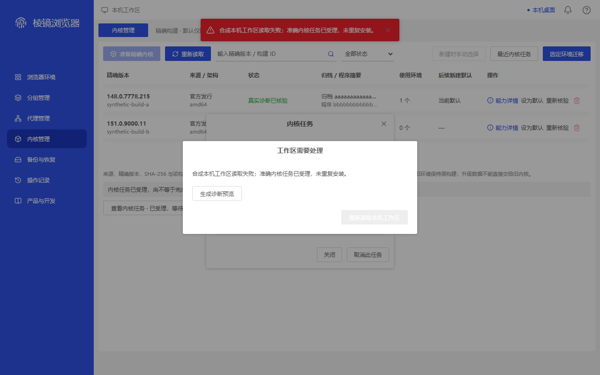
a914a3f1147ae1a7c37e893d903e2c752ea39827d872fabbbea9f635009992fa
gap-kernel-accepted-refresh-recovered · 1280×800
MAPPED — 400x328 task at x440/y244 stays wholly in viewport with accepted1/completed0/failed0 and readable close/cancel. Real reread held then released; same owned task after route return, one install and retained original environment identity. Earlier failure toast remains, not green installed success. Original result-container mapping only.
同类参考容器：batch-progress-fixture；不是同名原商业执行。
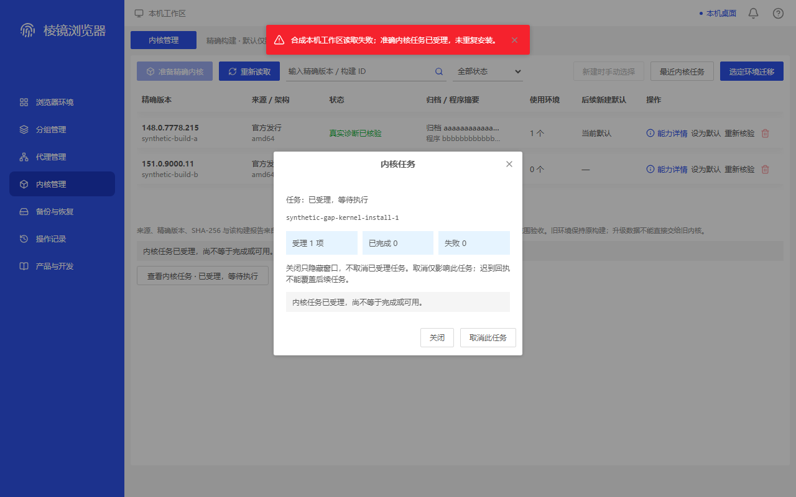
1944cc4bdba012bd3d5f0a3a37a01d5a593c31d9d03517f346d2687670dd4bbb
gap-kernel-delete-completed · 1280×800
MAPPED — 400×346、x440/y235、header40/footer58，完成1与关闭可见；灰说明已区分页面检查和桌面验收。只有合成精确移除回执，非原批次打开业务，未证明真实删除目录；本视口说明较另图多一行。
同类参考容器：batch-progress-fixture；不是同名原商业执行。
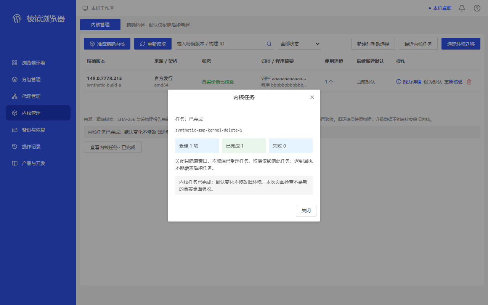
52c6e8f81c9f2963ba1a5d35155f9f62c53fae7d3ccc04316e4eed4bdc423f3e
gap-kernel-delete-refused · 1280×800
MAPPED — 400×222、x440/y297、footer y461/h58；精确构建范围、保留构建/确认移除及明确拒绝均可见。旧构建与默认未改，无假任务成功；仅借原短删除确认容器，不是原分组删除业务。
同类参考容器：group-delete-confirm；不是同名原商业执行。
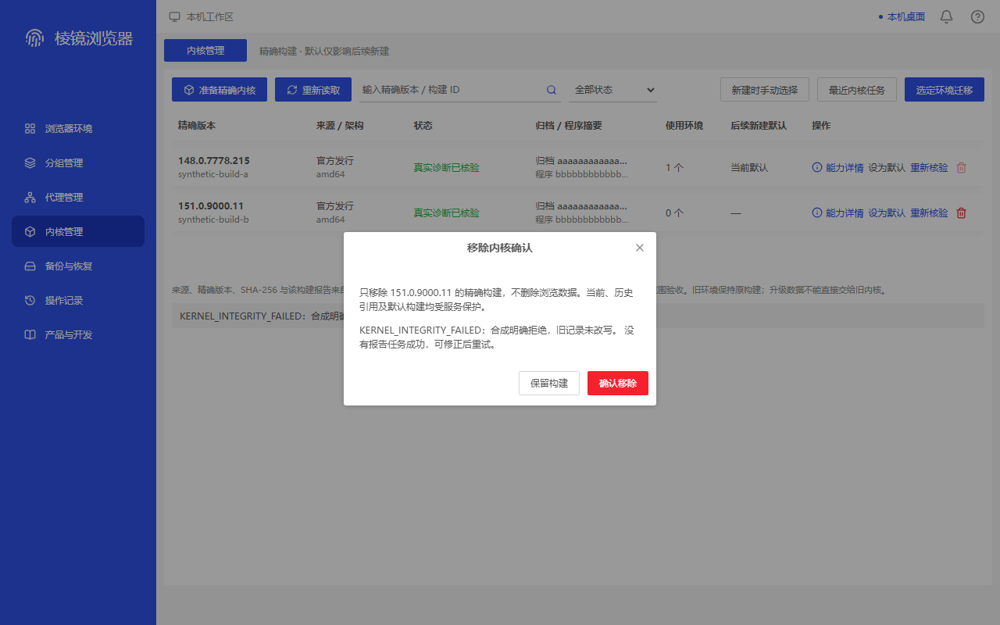
9a24e595ad94732774207e9f09b270eb66b86c13e354972c0ed75053aed13a4c
gap-kernel-delete-unknown · 1280×800
MAPPED — 列表保留两构建和原默认，受理未知说明及核实原内核请求可见，没有臆造新任务。相同requestId/payload核实移除请求；当前画面与复验未知相同但合同动作不同，只映射原列表/确认内容，不认证真实移除。
同类参考容器：group-delete-confirm；不是同名原商业执行。
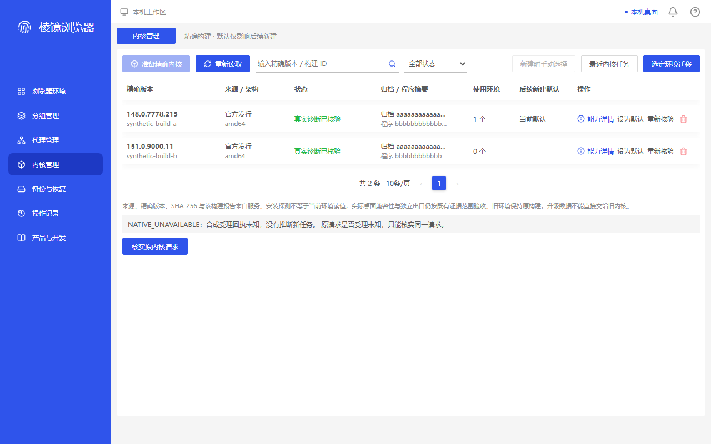
98d7cde53b9e6a87b88ce0883bd8190baf4f26839a64edb1592d8f516de5a213
gap-kernel-demo-capability-bottom · 1280×800
MAPPED — 660px主drawer、x620/top40/bottom8、header40/footer71；正文641/641/top0，自然内容已放得下，不是长内容滚底。能力分层与未真实安装说明、关闭可见；没有伪造observedFingerprint，仅借原编辑drawer。
同类参考容器：environment-edit；不是同名原商业执行。

912080bbb7fbc294ae7869277902e89dd2ab48cf426725fe21052c5daccdb86a
gap-kernel-demo-capability-dense-bottom · 1280×800
MAPPED — 660px drawer x620/y40/bottom8, actual scroll319/960/641 and final explanation24 plus safe demo boundary. Footer y721/h71 and confirmation remain visible. Restore toast obscures heading but not close/confirmation; original edit container only, not same kernel behavior or exact-pixel certification. No UI padding manipulation or real observed capability invented.
同类参考容器：environment-edit；不是同名原商业执行。
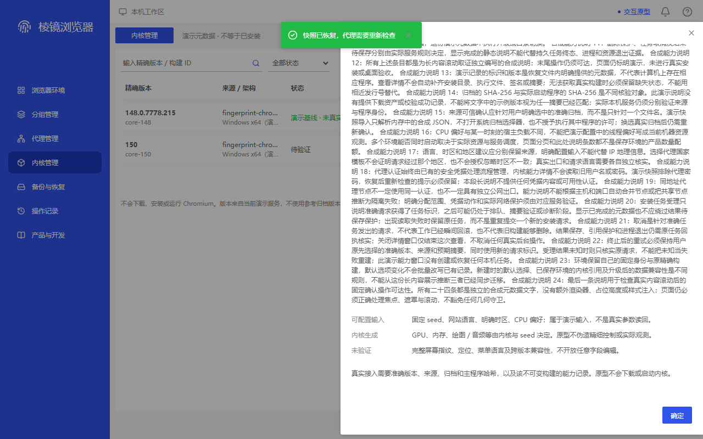
5053d3a67a2d189e74c48d78fc1224383de20915021f157812a35207a92295bd
gap-kernel-demo-list-dense-bottom · 1280×800
FAIL — V-KERNEL-DENSE-FOOTER：12条demo记录、第一页10行48px/间隔10保持，但分页y770/h48到底818，短视口切掉18px及底部说明；main高872，documentScroll.y=0。顶部恢复通知不是安装成功；守卫通过不能认证所声明底部位置。
同类参考容器：proxy-list；不是同名原商业执行。
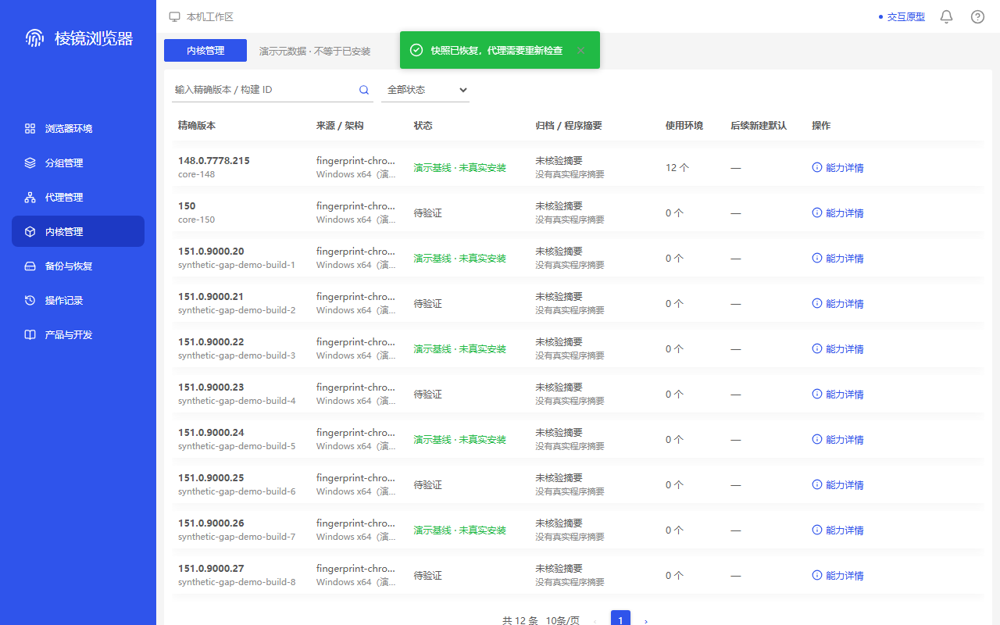
ad64cf06e4e9cb6f8ba6612b6cc0ef298c9e835f4cd09cae592a5413182ec6d6
gap-kernel-demo-list-dense-page-two · 1280×800
MAPPED — 恢复后12条演示元数据，第2页仅末两构建；2页分页、能力详情及不会下载/安装说明完整。没有原同名内核第2页，只借代理列表容器；10条/页不是产品配额，没有真实安装或元数据登记冒充。
同类参考容器：proxy-list；不是同名原商业执行。
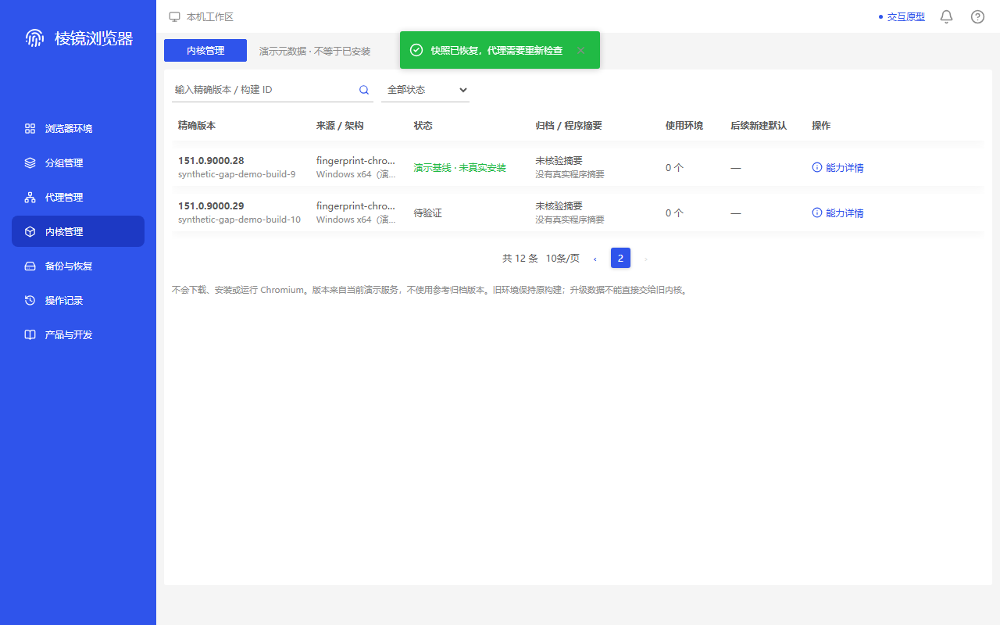
7afa56e5871ee26b16e3625aac196d5c23ed1fa22dbf3cf303bbd14fb378ef73
gap-kernel-demo-list-empty · 1280×800
MAPPED — 显式兼容demo快照恢复后0条，工具条、空态说明和分页保留；空态沿用真实内核准备文案，但页标和底部说明明确演示、不等于安装，本图无真实安装入口或执行。仅容器映射，不是原非空代理列表或native空态。
同类参考容器：proxy-list；不是同名原商业执行。
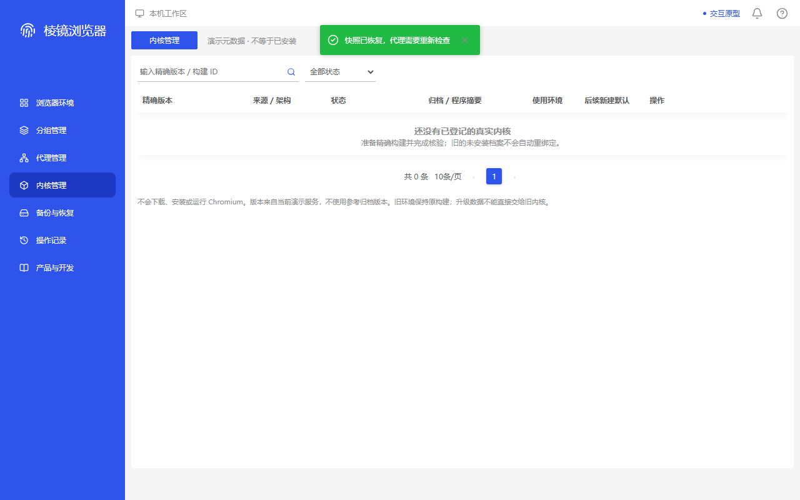
29208bdc2105ac4c84069450bf610656a771f4db05e6b83fd59eb7c265e8af93
gap-kernel-demo-list-no-match · 1280×800
MAPPED — demo搜索无匹配，搜索条件、40px表头、没有匹配内核及0条分页均可读，底部非真实安装说明完整。无修改提交；原参考是非空代理列表，仅容器映射，不能与恢复后的空库存互换。
同类参考容器：proxy-list；不是同名原商业执行。
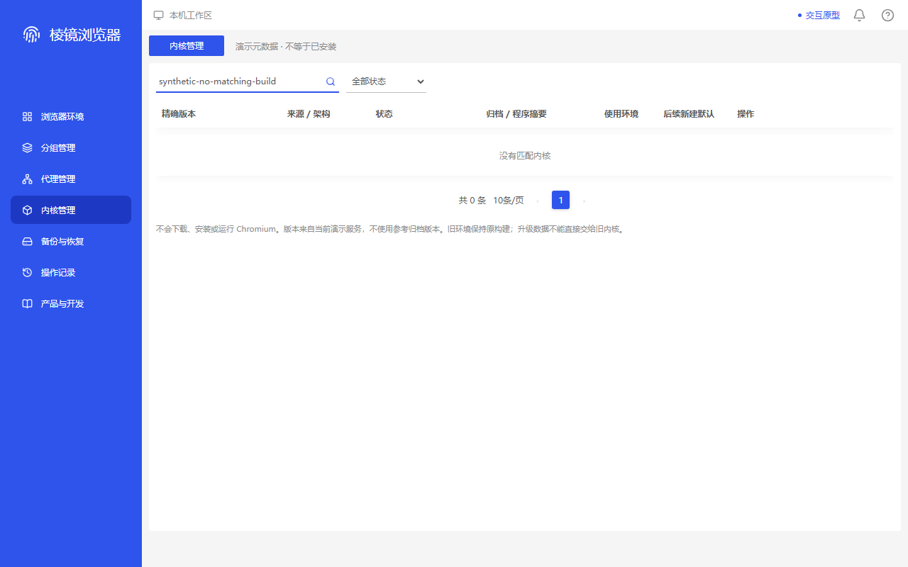
0d3d0811a75f2eaab5dc33bd861b8c9fa350084a1ed20c8022cde4c744bfec33
gap-kernel-demo-list-unavailable · 1280×800
MAPPED — 不可用/待验证筛选只剩150演示元数据；未核验摘要、没有真实程序摘要及能力详情可见，分页完整。没有假设正在核验或已安装；业务内容不同于原代理列表，仍仅映射表格容器。
同类参考容器：proxy-list；不是同名原商业执行。
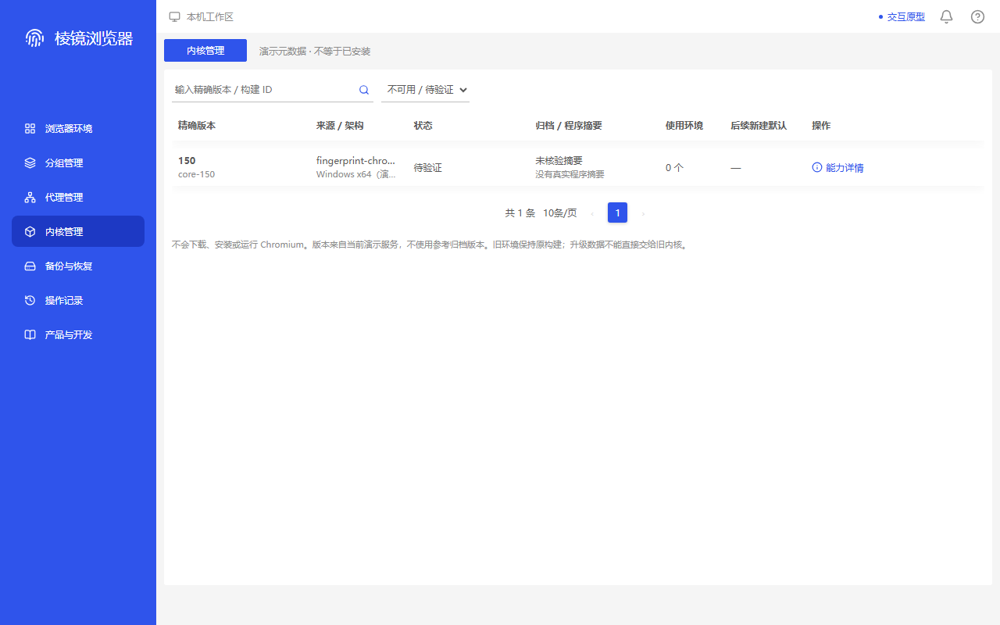
554883d395b40e6fb57e745957d1ee9d66b914b355e1213e0a41e38242acf2fd
gap-kernel-history-empty · 1280×800
MAPPED — 620×540、x330/y138、正文442/442/top0、footer y620/h58；历史表头、暂无持久内核任务记录及确定完整。无新核验/安装；原代理编辑只借容器，不是直接原内核历史。
同类参考容器：proxy-edit；不是同名原商业执行。
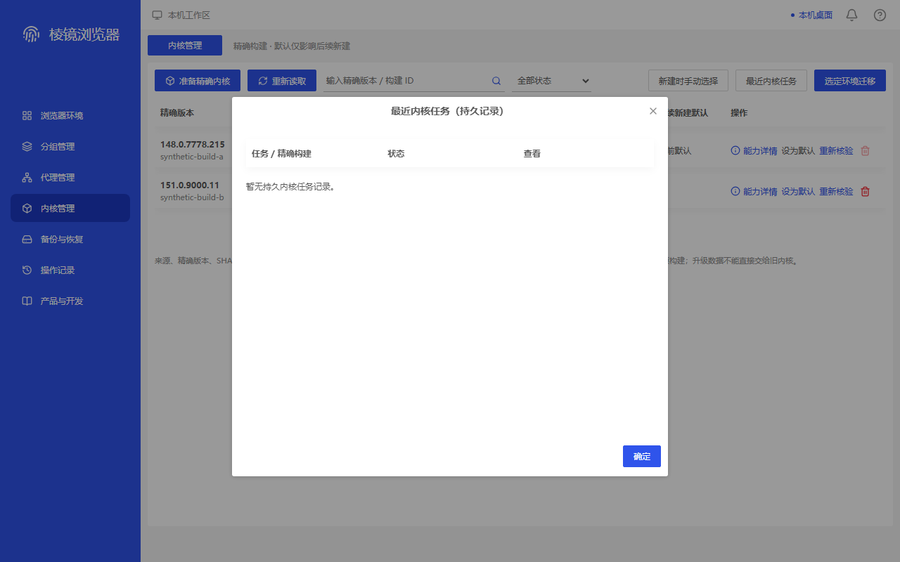
25792149bf762b54d4b84f4786db5b30c3c69e63b56dff37851cdc114b4d64eb
gap-kernel-history-expanded-bottom · 1280×800
MAPPED — 620×540历史窗，正文442/1518/top1076达到实际底部，末条历史和footer y620/h58完整；12条及展开采样均来自合成持久报告，无新安装/复验。seed技术行不是实测，不是原代理编辑底部业务。
同类参考容器：proxy-edit；不是同名原商业执行。
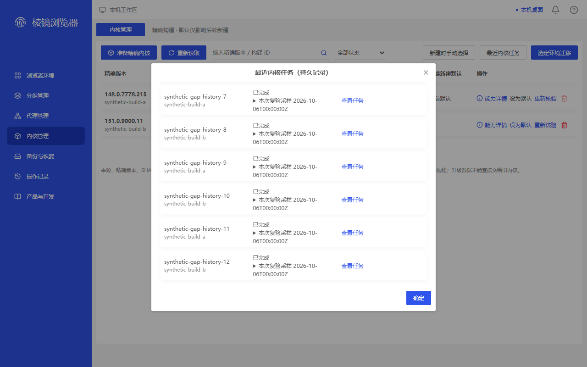
c83eb8b182ced3e1f1aa6036ac632429f6c02c3f3abdd391e0380e0c6298a985
gap-kernel-history-expanded-top · 1280×800
MAPPED — 620×540、x330/y138，正文442/1518/top0；第一历史任务及展开技术采样可见，长内容在独立正文中滚动，固定确定完整。12条合成记录，不认证seed读值或真实探针；与原代理编辑只是容器映射。
同类参考容器：proxy-edit；不是同名原商业执行。
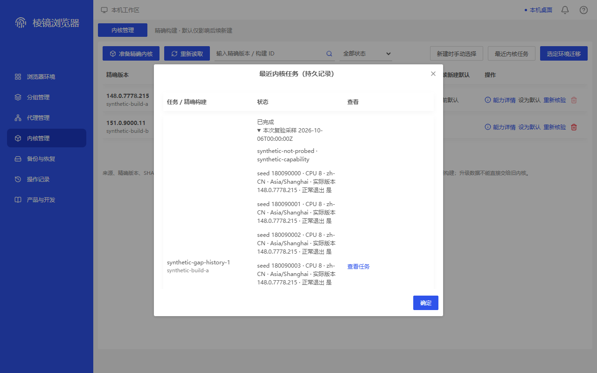
9af06a108d4675b2e213ff56440b7280877a3b0e5284cc03f716d8c2668a3663
gap-kernel-history-select-exact · 1280×800
MAPPED — 实际选择第12个准确历史任务后400×284、x440/y266，受理1/完成1/失败0及唯一关闭可见；历史表已退出，不是新安装或复验。仅原代理编辑的结果容器映射，不能认证整个历史任务的真实执行。
同类参考容器：proxy-edit；不是同名原商业执行。
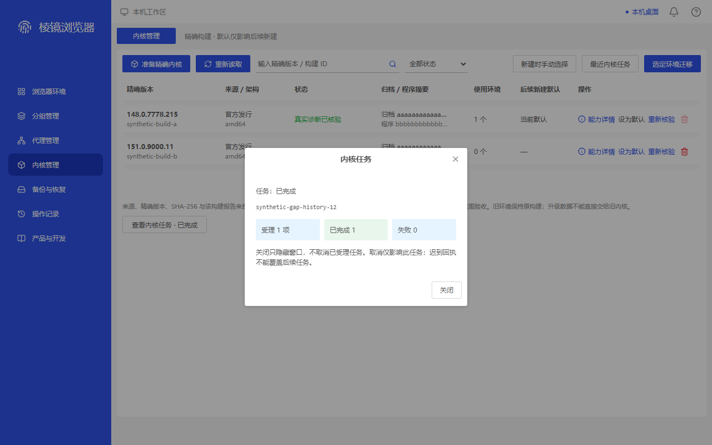
9ddac20b215775f63597c5825ab672ff0e582b64766949f92452e10667e9a03a
gap-kernel-install-local-unknown · 1280×800
MAPPED — 620×530、x330/y143，正文432/432/top0、footer y615/h58；原本地选择与可信勾选保留，原请求未知说明完整，主操作变核实原请求。两个同ID同payload调用不臆造任务；合成选择器，无OS选择或真实安装，仅借原添加表单。
同类参考容器：proxy-add；不是同名原商业执行。
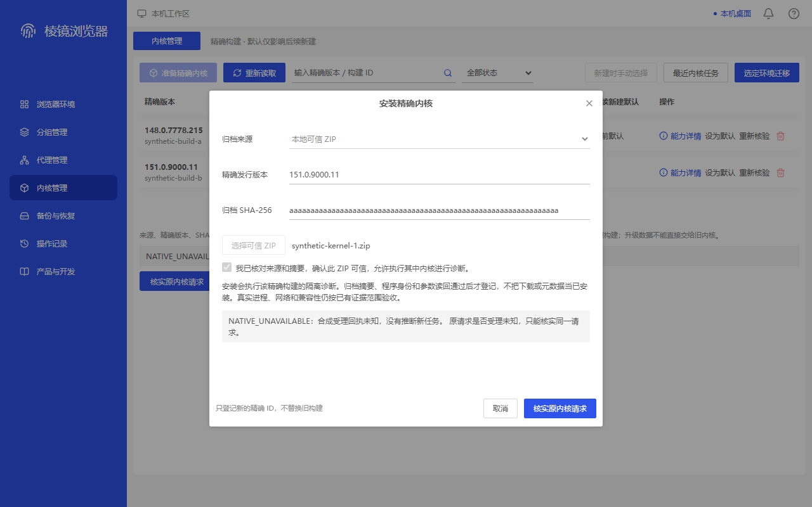
d50534db9e890859b6d03be0bb97b4619545c5db9e2ebe9bf43056651e1e4596
gap-kernel-install-malformed-receipt · 1280×800
FAIL — V-KERNEL-REQUEST-HINT-CLIP：620×420、x330/y198、正文322/346/top0、footer y560/h58；原请求说明末行在正文底边被截。畸形回执不建假任务、只核实同ID/payload虽正确，不能消除本图裁字；不声称文字永久不能滚到。
同类参考容器：proxy-add；不是同名原商业执行。
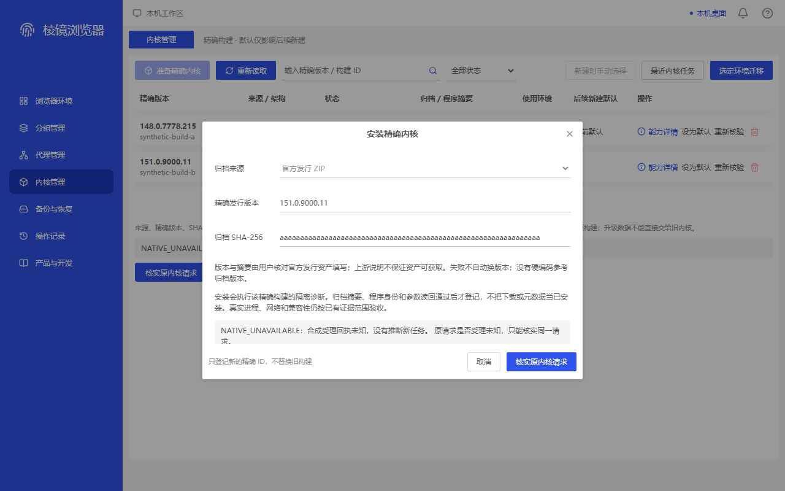
d58930797172e0de696ffaa4ff770d7eb44caa048ba90db5490688a5a3467eae
gap-kernel-install-official-unknown · 1280×800
FAIL — V-KERNEL-REQUEST-HINT-CLIP：官方受理未知表单620×420、正文322/346/top0、footer y560/h58，灰色提示末行求。被截。原ID/payload重放且没有假任务；与畸形回执本视口同图但独立合同记录，不能凭守卫降为映射通过。
同类参考容器：proxy-add；不是同名原商业执行。

d58930797172e0de696ffaa4ff770d7eb44caa048ba90db5490688a5a3467eae
gap-kernel-install-original-replay-accepted · 1280×800
MAPPED — 原未知请求核实后取得准确任务1；400×328、x440/y244、header40/footer58，已受理等待执行、受理1/完成0/失败0及关闭/取消完整。受理不等于完成，只映射原批次结果容器，未证明真实安装。
同类参考容器：batch-progress-fixture；不是同名原商业执行。
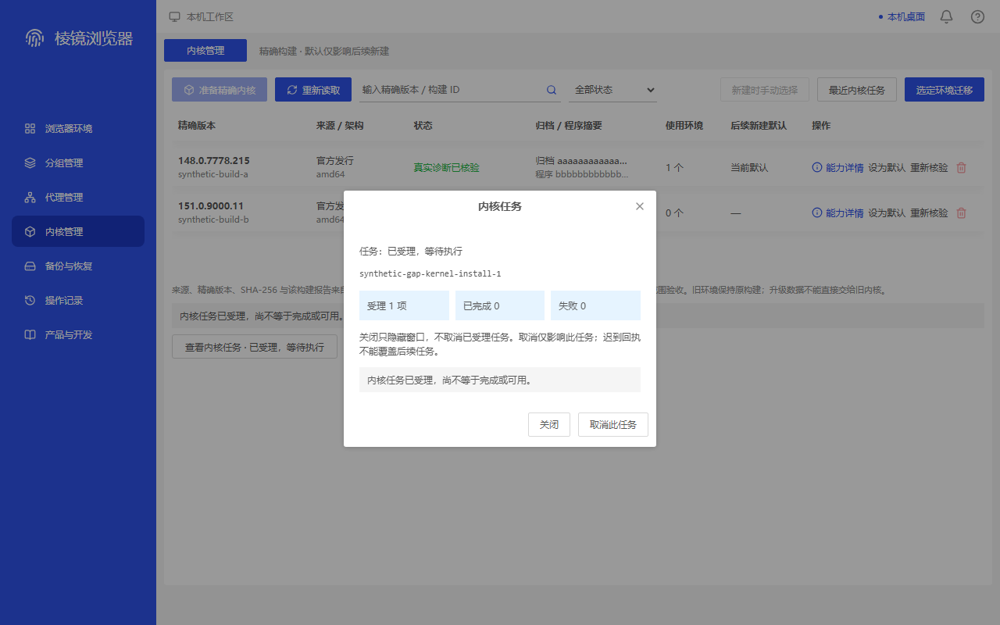
03fc46f628fa5761d3c0297c8d8e5838c4287fe941753f65b63a9d6f817f8f51
gap-kernel-install-phase-acquiring-archive · 1280×800
MAPPED — 400×328、x440/y244、footer y514/h58；取得精确归档并校验摘要阶段、任务ID及完成0可读。仅有限合成阶段回执，旧环境构建未变；不是实际下载/网络正在执行，也没有同名原内核业务。
同类参考容器：batch-progress-fixture；不是同名原商业执行。
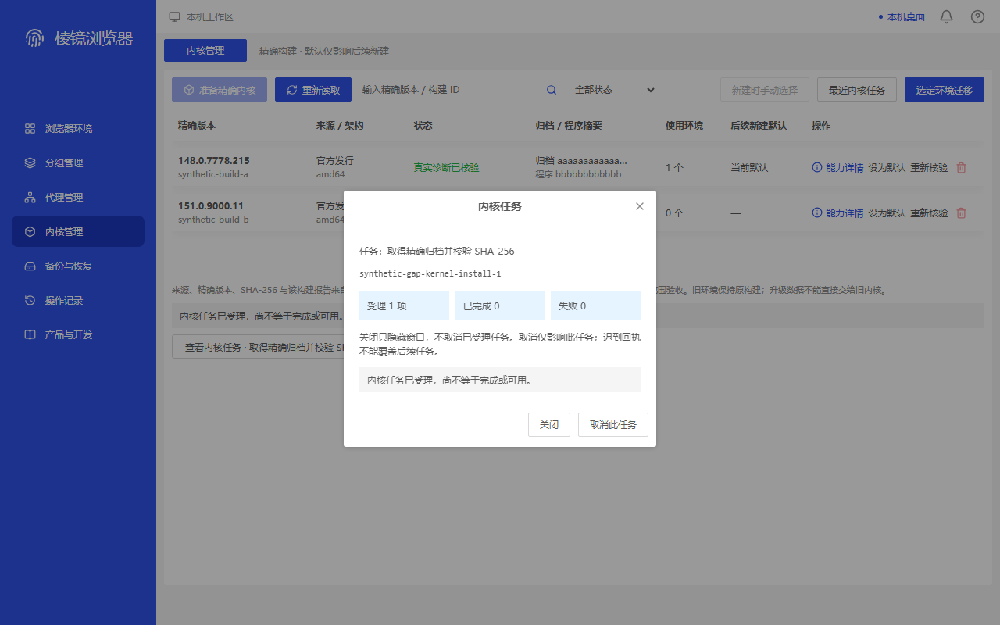
1add38de9550ece3e7748e7f89a7d03ea14a38ce617eb7a648aa934e3f7ac154
gap-kernel-install-phase-completed · 1280×800
MAPPED — 400×346、x440/y235、footer y523/h58；合成持久完成1、失败0和关闭完整，说明页面检查不是桌面验收，旧构建未改。与待保存分支分开；只映射原结果容器，不认证真实安装/核验。
同类参考容器：batch-progress-fixture；不是同名原商业执行。
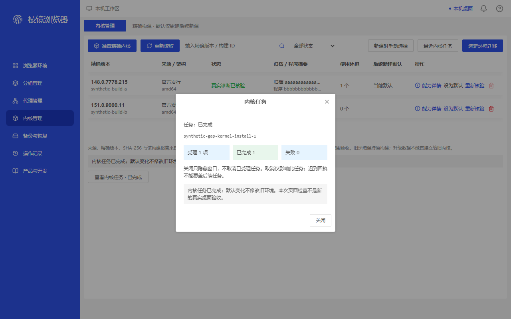
bcce0d92d4d24116fbbb4445914a0294b194c9d069fffe9fa4286ca47e90fdb6
gap-kernel-install-phase-extracting · 1280×800
MAPPED — 400×328、x440/y244，安全暂存解包阶段、受理1/完成0/失败0和关闭/取消完整；footer y514/h58。仅合成任务显示，旧构建不变，没有真实解包或目录I/O；原批次结果只借容器。
同类参考容器：batch-progress-fixture；不是同名原商业执行。
68d7196a97c825284a789fd44e61969091bfb647444bb82369ce5d8d3d456e73
gap-kernel-install-phase-probing · 1280×800
MAPPED — 400×328、x440/y244，隔离探测身份/参数阶段、任务ID及完成0可见，footer y514/h58无切边。合成有限回复不是实际探针或实测指纹；旧构建不变，与原结果窗口仅容器映射。
同类参考容器：batch-progress-fixture；不是同名原商业执行。
56dd19da535ca83793af41f3936300bf7b64c5921c0c65b922c07ab9d3fee050
gap-kernel-install-phase-publishing · 1280×800
MAPPED — 400×328、x440/y244，发布不可替换的新内核ID阶段及完成0完整，关闭/取消可见。此为合成回执，不是已登记真实构建，也不改旧环境引用；没有同名原业务，只借400px结果容器。
同类参考容器：batch-progress-fixture；不是同名原商业执行。
d8647850ec07fe0dc2d3967be711f3a1b01eb29b5ec7bf7f105073e8fd09c28b
gap-kernel-install-phase-queued · 1280×800
MAPPED — 400×328、x440/y244，已受理等待执行、准确任务1、受理1/完成0/失败0与关闭/取消完整。合成queued并未宣称安装完成或可用；旧构建未换，原批次结果只提供容器参考。
同类参考容器：batch-progress-fixture；不是同名原商业执行。
a78a0a5d03f2ccffc34ab3c864ff7843a81da789e0c18104855b93f3051c9290
gap-kernel-install-phase-verifying-extracted-files · 1280×800
MAPPED — 400×328、x440/y244，锁定解包文件并复核全部摘要阶段和完成0可见，footer y514/h58。只有合成合同回执，未执行真实锁文件/核验/目录操作，旧构建不变；不能当原结果业务直接复刻。
同类参考容器：batch-progress-fixture；不是同名原商业执行。
b25cc10dc623d7b5e4096aa579b7cf423f129e40806c06d64b8651c6a588b926
gap-kernel-local-chooser-cancelled · 1280×800
MAPPED — 620×530、x330/y143、footer y615/h58完整；第二次合成选择取消，原选择与可信勾选保留，安装调用0。不是OS选择器或取消已运行安装；原添加代理表单只映射620px容器。
同类参考容器：proxy-add；不是同名原商业执行。
736fe70552db31839693cc184b6a46cec11950a9ab9b823b45be58c957205dd8
gap-kernel-local-chooser-refused · 1280×800
MAPPED — 620×530、x330/y143，拒绝新选择的提示完整，旧选择/token及可信勾选仍保留，安装0。没有token是新选择回复，不写成旧选择已丢失；仅合成选择器，无OS或真实安装，非原添加业务。
同类参考容器：proxy-add；不是同名原商业执行。
fcf793728074b68578adbeb2931b35c649cf5d8eca6331bd725ceffce75d57f5
gap-kernel-local-chooser-unknown · 1280×800
MAPPED — 620×530、x330/y143，选择未确认说明、原合成选择和可信勾选可读，footer y615/h58完整；2次选择/0安装。不推断新文件已选择或真实安装执行，仅映射原添加表单容器。
同类参考容器：proxy-add；不是同名原商业执行。
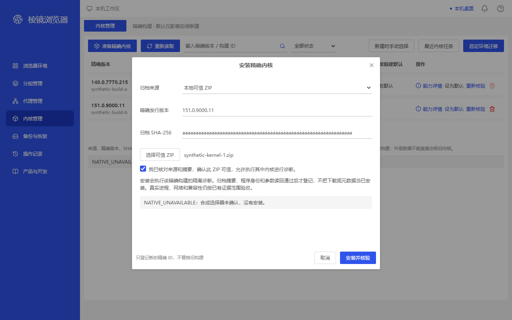
ab3f89829cce7aa9035faaa750a9f155a275fadf14a29ac20787afe17c41da54
gap-kernel-local-invalid-fields · 1280×800
FAIL — V-KERNEL-VALIDATION-POPUP：无效版本/摘要及版本焦点明确、安装0，但浏览器校验气泡的文字/警告图标极淡，不能认证稳定可读错误态。620×530/header40/footer58完整；这是本图捕获状态问题，不推断App永久低对比度或原代理错误业务。
同类参考容器：proxy-add；不是同名原商业执行。
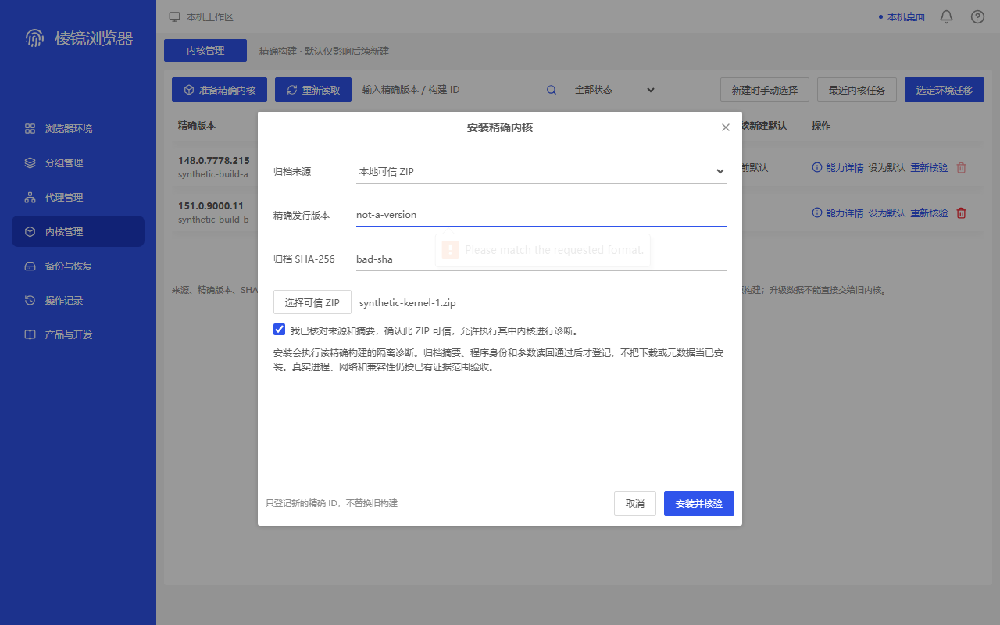
f229d31b79af55ca53b517cc589eb28b41f7e03ebbb33329d92673c2b7335f98
gap-kernel-local-selected-reset · 1280×800
MAPPED — 620×530、x330/y143，新合成ZIP选择替换旧token后可信勾选清空，安装并核验禁用；两次选择、安装0，footer y615/h58完整。没有真实OS选择或安装；这是本机安全分支，不是原添加代理业务。
同类参考容器：proxy-add；不是同名原商业执行。
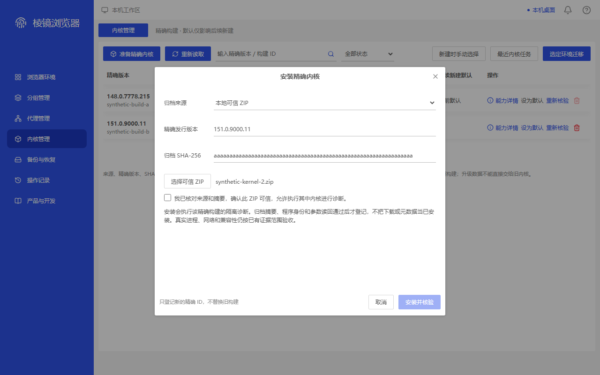
3606d11eead15e3524a60c289977e04a348aec9285d2caa9992664e6fbcf1412
gap-kernel-native-default-change · 1280×800
MAPPED — 默认标记移到合成B，后续新建范围及原构建行/分页完整；单次准确SetDefault请求。actionProof中旧环境seed/构建/代理不变，不把默认变更写成升级旧环境；原代理列表只有容器参考，非真实native验证。
同类参考容器：proxy-list；不是同名原商业执行。
43a496d0f05f71b4c869f6a0fb09ffb4a83275b13fbf982f95e25481182e243a
gap-kernel-native-default-manual · 1280×800
MAPPED — 新建时手动选择的合成默认更新提示可见，两行均无当前默认标记，分页完整；原环境seed/构建/代理保留。不是选了待验证构建可启动，也不是产品配额；只有原列表容器映射，没有真实默认持久化证明。
同类参考容器：proxy-list；不是同名原商业执行。
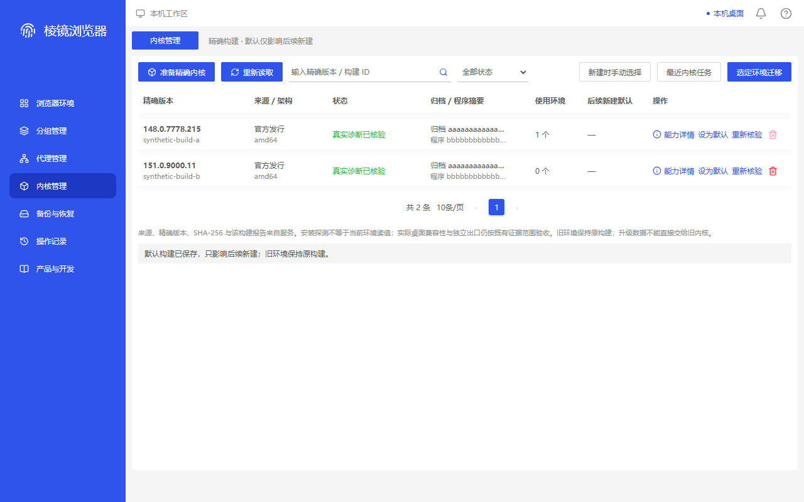
8d5af27d7ac16645b042c0546d212c3b3b0b390ce779d6d6cb670293d94192e4
gap-kernel-native-default-unknown-replay · 1280×800
MAPPED — 未知默认请求使用同一ID/payload核实后默认B及更新说明完整；原环境seed/构建/代理不变。只认证本合成往返的可见状态，不扩展到真实native事务或旧环境升级；原代理列表仅容器映射。
同类参考容器：proxy-list；不是同名原商业执行。
11e8594e0033b130055f37807b40262dababbb28a5e92048a20a76480c9f0ad0
gap-kernel-native-default-unknown · 1280×800
MAPPED — 默认提交未知说明及核实原默认选择请求完整，刷新读取到B默认并不等于该回执已成功；保留原请求和原环境seed/构建/代理。表头40/白行48保持，只映射原代理列表，不认证真实native默认更新。
同类参考容器：proxy-list；不是同名原商业执行。
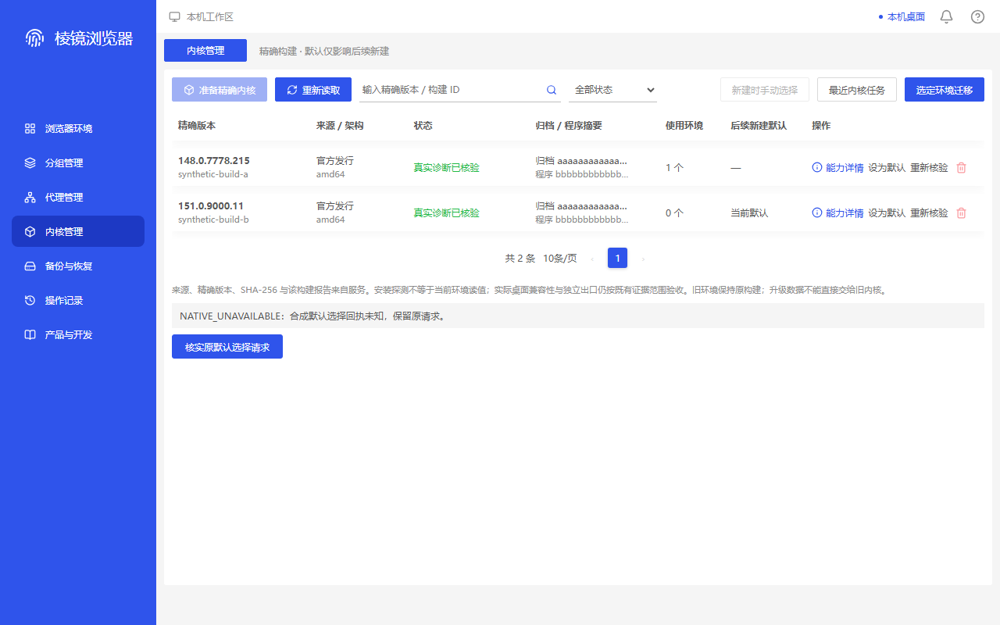
66a868430ce78e597d74a97ded14dcf3cb16e20a9581103e6f2baae52bd5cf22
gap-kernel-native-list-dense-bottom · 1280×800
FAIL — V-KERNEL-DENSE-FOOTER：12条/当前10行，表头40、白行48保持，但分页y770/h48到底818，底边切18px，能力边界说明在画面外；main872且documentScroll.y=0。声明滚底/固定分页不能由守卫代替，非原同名内核列表。
同类参考容器：proxy-list；不是同名原商业执行。
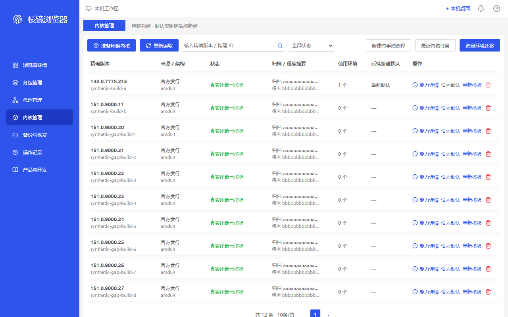
b3a0ddea989ace2eb30618ca5c11fc1179d189dddac3e01cb2359fd265a205da
gap-kernel-native-list-dense-page-two · 1280×800
MAPPED — 合成12条构建的第2页仅末两行，原默认不在本页，精确行操作、第2页标记和能力边界说明完整。10条/页不是保存数量配额；不同于原代理两条第一页内容，仅映射容器，不认证真实核验。
同类参考容器：proxy-list；不是同名原商业执行。
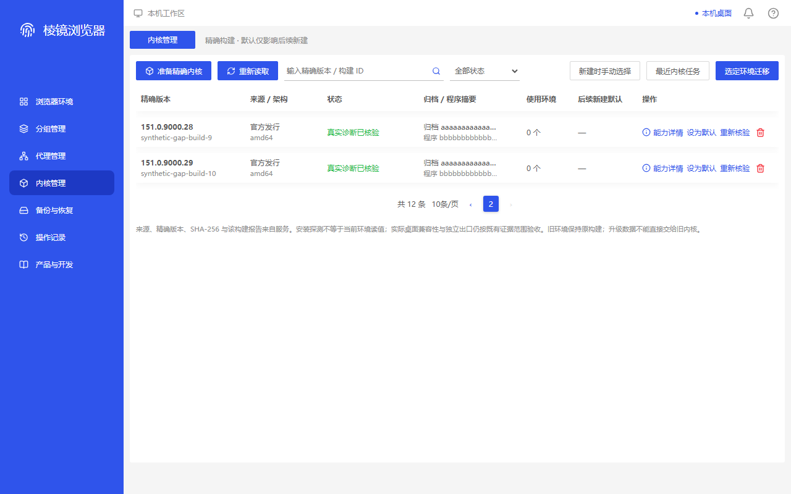
81402496543910efea5f0f43e4b2c2ba665769d9f9df2fcd1d840cb40aa33ff4
gap-kernel-native-list-empty · 1280×800
MAPPED — Empty kernel table/toolbar/pagination in narrower proxy-list management shell remain readable with zero count and manual default. Finite valid Workspace.Read kernelRecords[] preserves backing arrays and original identity; no blocker, install submission or fake available build. Kernel-empty direct original behavior remains unavailable.
同类参考容器：proxy-list；不是同名原商业执行。
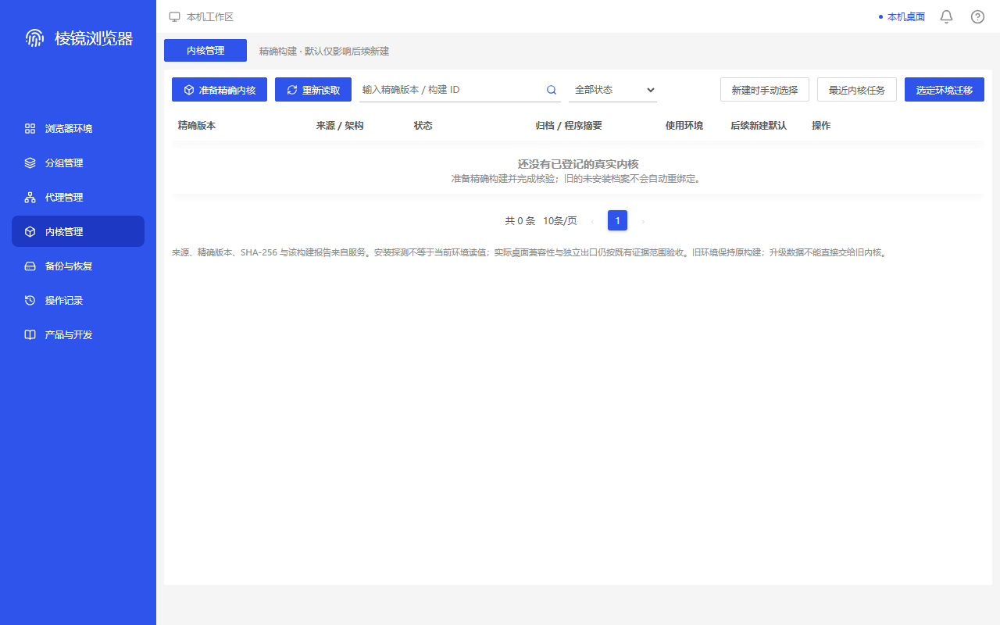
4ddcf87b39380f8058425e3c9fd0ec44a072e4022b85ebd28d68beed4d529093
gap-kernel-native-list-no-match · 1280×800
MAPPED — 搜索无匹配，准备/读取等入口、搜索词、表头和0条分页完整；没有修改或新任务。不是原代理非空列表或native空库存；只认证本合成内核筛选的容器映射，不证明真实查询服务。
同类参考容器：proxy-list；不是同名原商业执行。
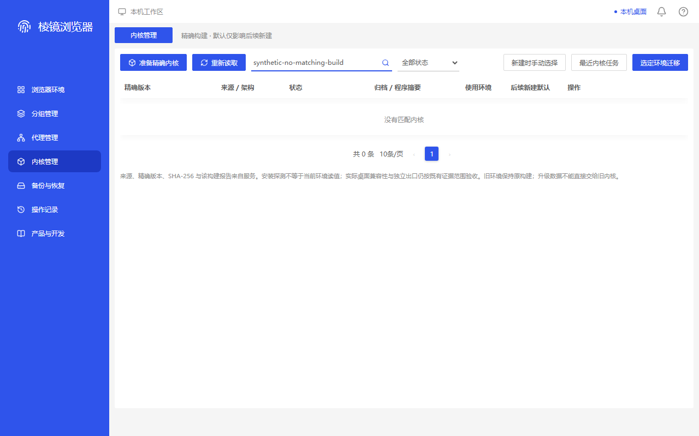
ecb1e9c90612931c32282d7df20ffbb597e24cd020aaf03537e36aeeaff19b4d
gap-kernel-native-list-unavailable · 1280×800
MAPPED — 不可用筛选仅合成B核验失败行，设为默认禁用、重新核验及能力详情可见，分页完整。说明没有把失败构建标可用；保留的是现有精确动作，不代表本次真实核验执行，原列表只作容器。
同类参考容器：proxy-list；不是同名原商业执行。
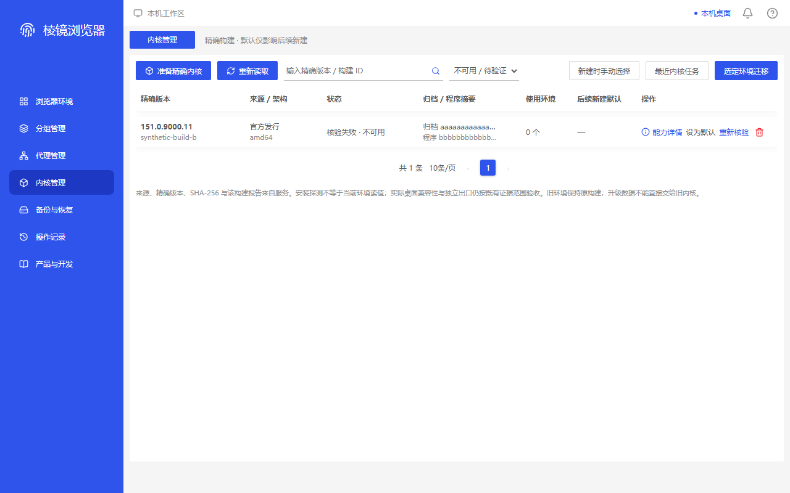
a005173445b4f8fbb10855acd45e51614c0cde9b9b354b6011f668cbfb025ec9
gap-kernel-read-error-retains-task · 1280×800
MAPPED — 400×346、x440/y235，STORAGE_READ_FAILED说明完整，准确原任务仍queued、完成0；关闭/取消可见，未重放安装。读失败不是任务终态失败，仅原400px结果容器映射，不能证明真实任务读取或恢复。
同类参考容器：batch-progress-fixture；不是同名原商业执行。
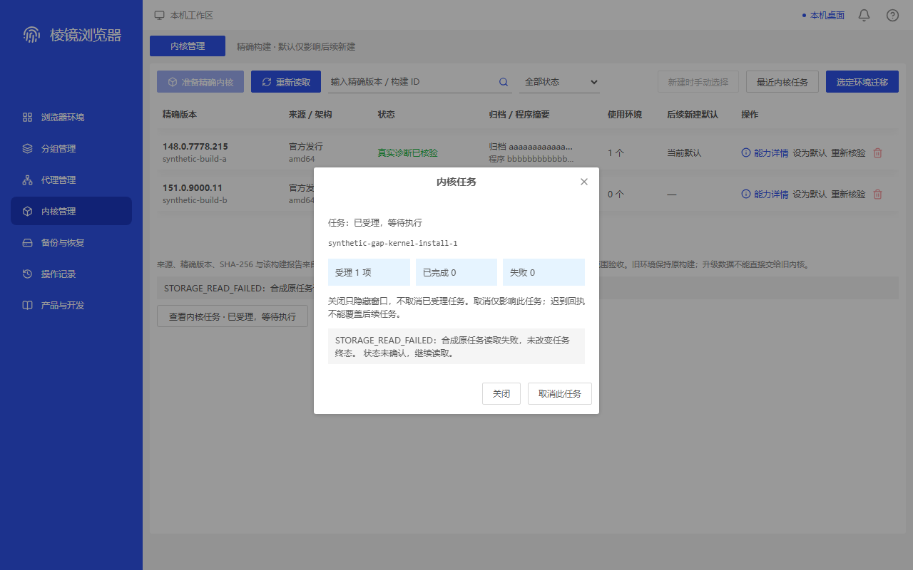
ce768081ae03470090b099ca736458f60b8909c053281a63f96a5ba1df0eed19
gap-kernel-task-cancel-requested · 1280×800
MAPPED — 400×328、x440/y244，取消请求只针对原任务1；图仍显示原queued/已受理等待执行，取消按钮禁用，完成0。请求标记不是已取消终态，不认证真实取消；仅借原结果容器，不因guard通过改称取消完成。
同类参考容器：batch-progress-fixture；不是同名原商业执行。
f94967d00a1abf8bff350aca1190dd1663d4b4472a3881d7c1303bab3115784b
gap-kernel-task-cancelled · 1280×800
MAPPED — 400×328、x440/y244，准确原任务已取消、完成0，关闭/重新准备完整；旧受理说明仍在，不把它称新任务或完成安装。只显示合成取消回执，与原批次结果内容不同，不认证真实取消。
同类参考容器：batch-progress-fixture；不是同名原商业执行。
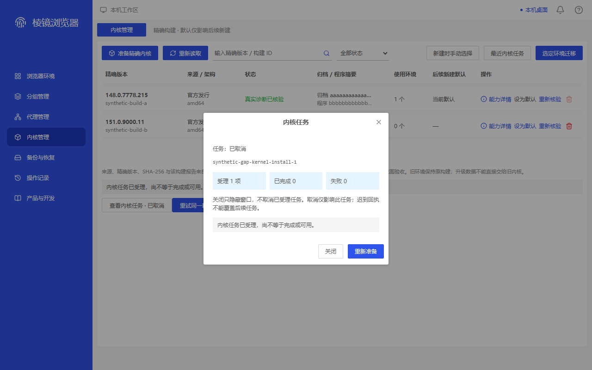
6e7782b3dd2766d799397a1f2bfdb19423a1398d045a5d092179b54e0b640ce2
gap-kernel-task-interrupted · 1280×800
MAPPED — 400×376、x440/y220，任务中断、APPLICATION_INTERRUPTED、失败1和重新准备可读，footer y538/h58。底部仍为旧受理说明，非新完成通知；与另一视口消息长度不同，只限合成任务状态及原结果容器映射。
同类参考容器：batch-progress-fixture；不是同名原商业执行。
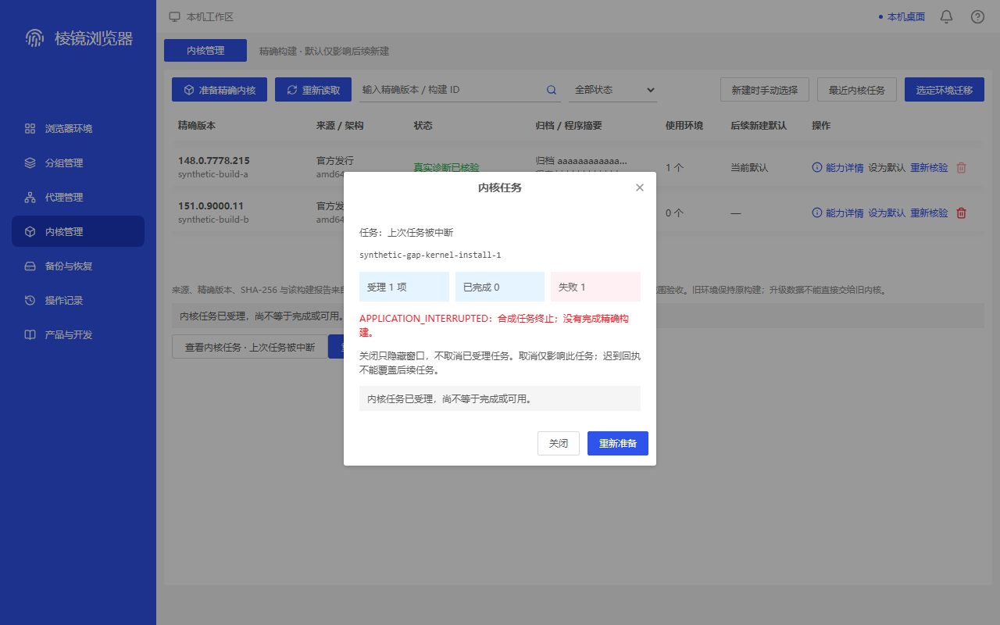
3fb9f561b998c998d30d25ba9a9d9c973555627fd4cee9921ba622e8ccb56948
gap-kernel-task-persistence-blocked · 1280×800
FAIL — V-KERNEL-PERSISTENCE-LABEL：400×358、x440/y229，顶部和下层入口写已完成，却完成0且红字结果待保存/尚非持久终态，取消禁用。原任务保护正确也不能消除状态矛盾；应优先显示待保存，不将合成保护态当普通完成。
同类参考容器：batch-progress-fixture；不是同名原商业执行。
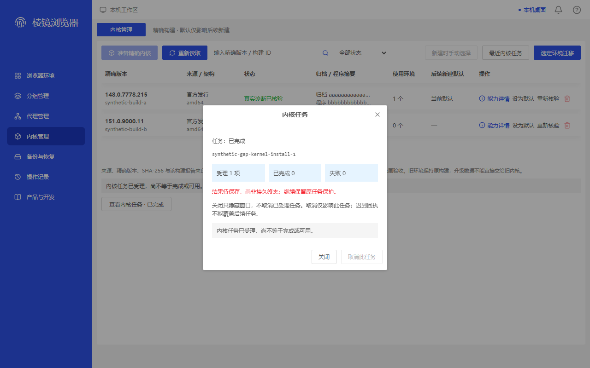
46e7581528b734218f1f8e2ba848707cd46cebba4141632a78c6dfd797697ed5
gap-kernel-task-unknown · 1280×800
MAPPED — 400×346、x440/y235，取消回执未知具体说明、准确任务ID、原queued与完成0完整，关闭/取消仍可见。未知并未变已取消或失败；仅原结果容器映射，保持原任务核实，不证明真实native控制成功。
同类参考容器：batch-progress-fixture；不是同名原商业执行。
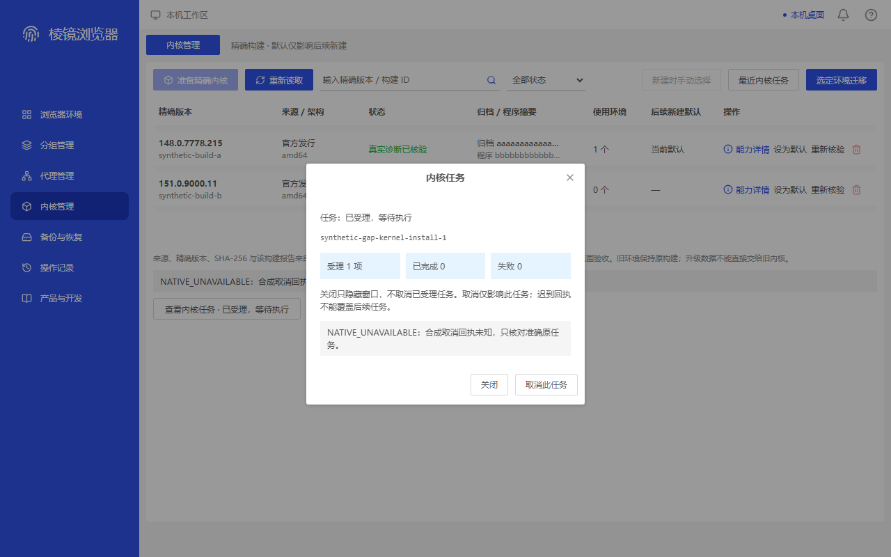
0fa2fafd910ba85caf9f16adb1f9024675ed849570fb2703eacdd2d6ff36c70e
gap-kernel-terminal-retry-late-receipt · 1280×800
MAPPED — 400×328、x440/y244，当前任务2准确可见、queued/完成0；终态重试使用新请求同精确构建，旧任务1迟到读取未替换所有者。仅保存合成actionProof与本图，非真实异步运行或原同名业务。
同类参考容器：batch-progress-fixture；不是同名原商业执行。
c7e96dc215076bc25f38e494a0c6430d63e490eb2dfe2f21a0a91453071b6c01
gap-kernel-verify-completed · 1280×800
MAPPED — 400×346、x440/y235，合成精确核验任务完成1、失败0、唯一关闭及不是新桌面验收说明完整。原构建保护未改，不能由合成持久回执认证真实文件/内核探针；只借原结果容器。
同类参考容器：batch-progress-fixture；不是同名原商业执行。
d82708d6eb9b2fa4c68fd88c6525db75b697c05760aca0dbcac5dda18180673b
gap-kernel-verify-phase-verifying-files · 1280×800
MAPPED — 400×328、x440/y244，核验既有文件摘要阶段、准确复验任务、受理1/完成0/失败0及关闭/取消完整。只是有限合成阶段回复，不代表正在真实核验文件；没有原同名业务，仍为结果容器映射。
同类参考容器：batch-progress-fixture；不是同名原商业执行。
2fbd5443c30daa81ff8f3e619ea9e5a4344856daf077f363b5ab31c6efd62773
gap-kernel-verify-refused · 1280×800
MAPPED — 列表两构建、原默认及明确KERNEL_INTEGRITY_FAILED说明完整；准确复验请求被拒，旧记录未改且没有新任务成功。不是失败行真实重新探测结果；仅原代理列表容器映射。
同类参考容器：proxy-list；不是同名原商业执行。
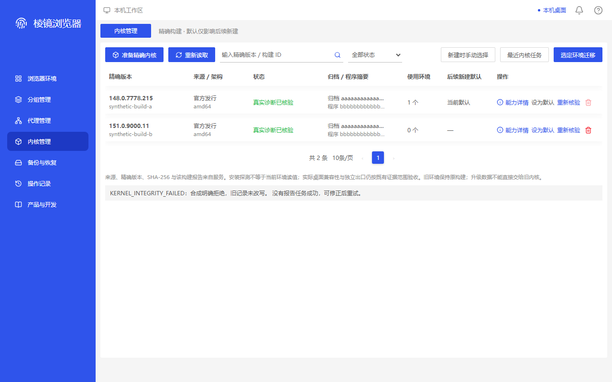
4bd9d1f8996aed6d4fc146bbe82868a4625d5fa5832b0cb71c5426aa692df3f9
gap-kernel-verify-unknown · 1280×800
MAPPED — 复验受理未知说明及核实原内核请求可见，准确原ID/payload保留，未虚构新任务或改默认。与移除未知为同画面但不同合成请求；只映射列表容器，不证明真实复验、文件读取或任务执行。
同类参考容器：proxy-list；不是同名原商业执行。

98d7cde53b9e6a87b88ce0883bd8190baf4f26839a64edb1592d8f516de5a213
gap-proxy-check-row-authentication · 1280×800
MAPPED — Full PNG seen; G49 P13/r1. proxy-list anchor: authentication in progress, row Check/Edit disabled, Cancel visible, no exit IP. Active-task state lacks original counterpart; synthetic check is not launch permission.
同类参考容器：proxy-list；不是同名原商业执行。
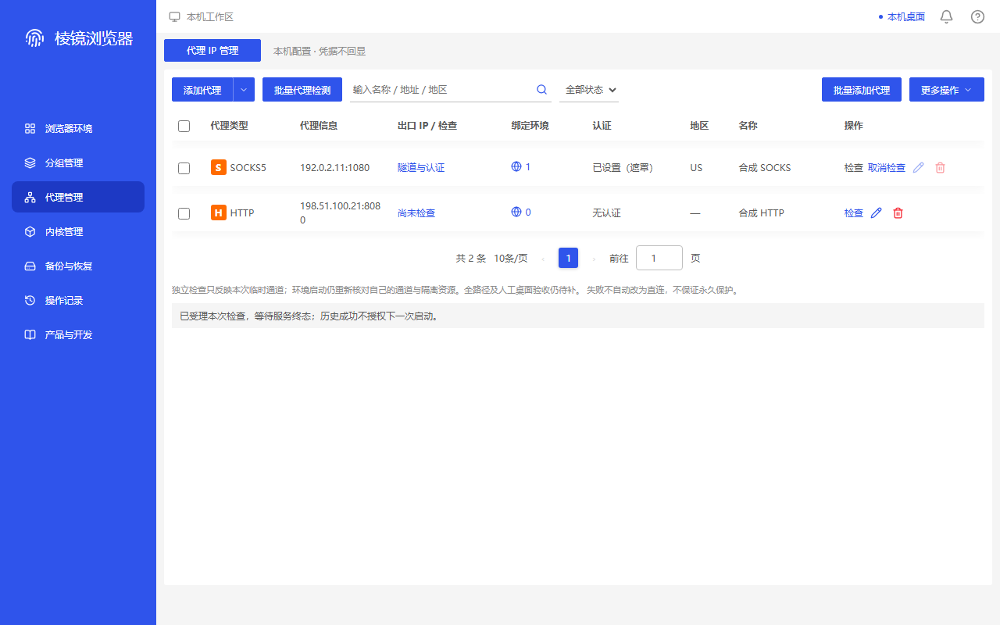
2f71e71c26e134118fa6f0ebaa3d84f939008017008159e3b9298bf837d9f6b0
gap-proxy-check-row-cancel-requested · 1280×800
MAPPED — Full PNG seen; G50 P13/r2. Queued original task remains; requested cancellation disables Cancel rather than announcing completion. proxy-list is only a container anchor; no original cancel phase or native acceptance.
同类参考容器：proxy-list；不是同名原商业执行。
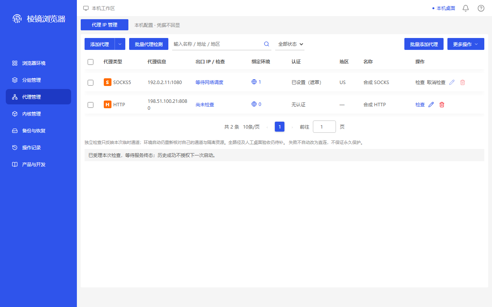
e20ec4e9eea2a145bd86cfa6b6dd049f67af9cce64f766c6655e4065d0d81862
gap-proxy-check-row-persistence-pending · 1280×800
MAPPED — Full PNG seen; G51 P13/r3. Row explicitly says result pending save; Check/Cancel disabled and no fabricated exit IP. Original proxy-list lacks this persistence phase; not a durable success claim.
同类参考容器：proxy-list；不是同名原商业执行。
b3f1400f644e973ec18d7493304f3d1a61a883076bfb56665849a0ca53e53eb6
gap-proxy-check-row-queued · 1280×800
MAPPED — Full PNG seen; G52 P13/r4. Original synthetic check queued, Cancel available, mutation controls disabled, second proxy unchanged. proxy-list anchor lacks a direct original queued-task state.
同类参考容器：proxy-list；不是同名原商业执行。
079be10bb60f1a05db4022c34707c84c83024caa4e9530c0b5658c35df1e8d0f
gap-proxy-check-row-read-error · 1280×800
MAPPED — Full PNG seen; G53 P14/r1. Read-unconfirmed status retains the queued original operation instead of inventing a report or IP. Retry/read-error phase has no original counterpart; no native network proof.
同类参考容器：proxy-list；不是同名原商业执行。
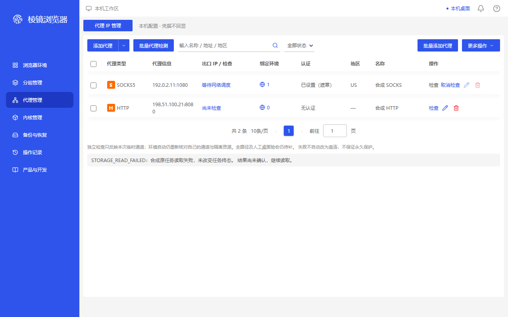
dc0ef5ec643788d1da7d6c473d275fc1e762843c33a6a819177d129bd7f01b00
gap-proxy-check-row-target-tls · 1280×800
MAPPED — Full PNG seen; G54 P14/r2. Target TLS stage is visible; task still active with Cancel, no success IP projection. Same-view proxy-list comparison is a state mapping, not an original TLS-phase screenshot.
同类参考容器：proxy-list；不是同名原商业执行。
789b8d0c80f2fb03682c46d7d702edf0e0eb63c2c86dab0fb739288fe5dcd198
gap-proxy-check-row-unknown · 1280×800
MAPPED — Full PNG seen; G55 P14/r3. Unknown branch reconciled using two identical original check payload hashes; captured phase is accepted/queued, not still-unknown completion. No original recovery phase; seeds/bindings proof is synthetic.
同类参考容器：proxy-list；不是同名原商业执行。
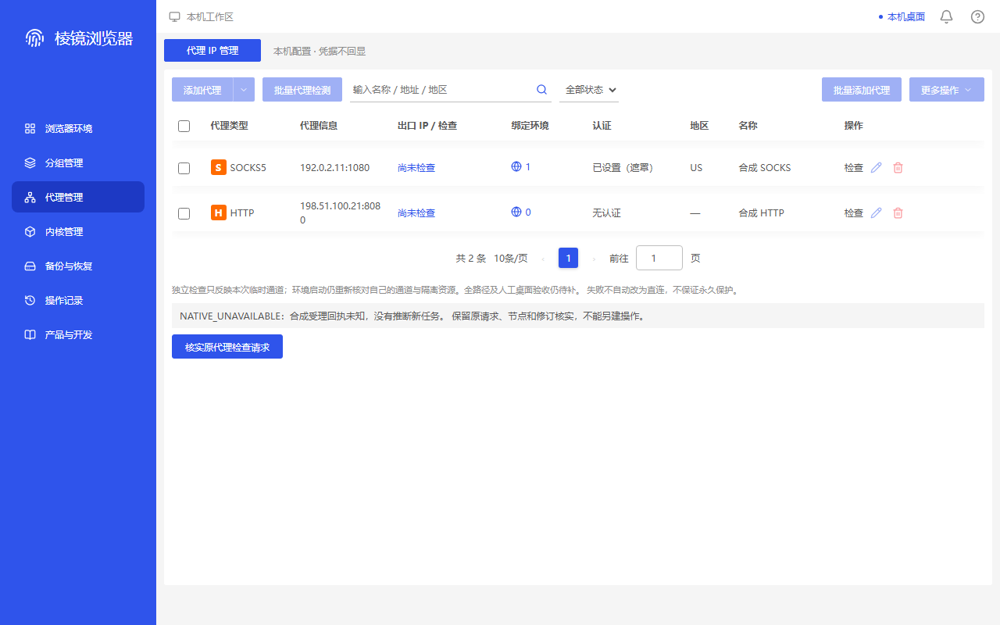
8fb94f6ee6676fafd4a8ebbfeaa2f34dd335559fae633ed0f60edccdfdc0cba4
gap-proxy-delete-confirm · 1280×800
MAPPED — Full PNG seen; G56 P14/r4. 400px proxy delete confirmation retains reference protection and Cancel/Confirm, with zero delete requests. group-delete-confirm is a different operation and only a short-confirm container donor.
同类参考容器：group-delete-confirm；不是同名原商业执行。
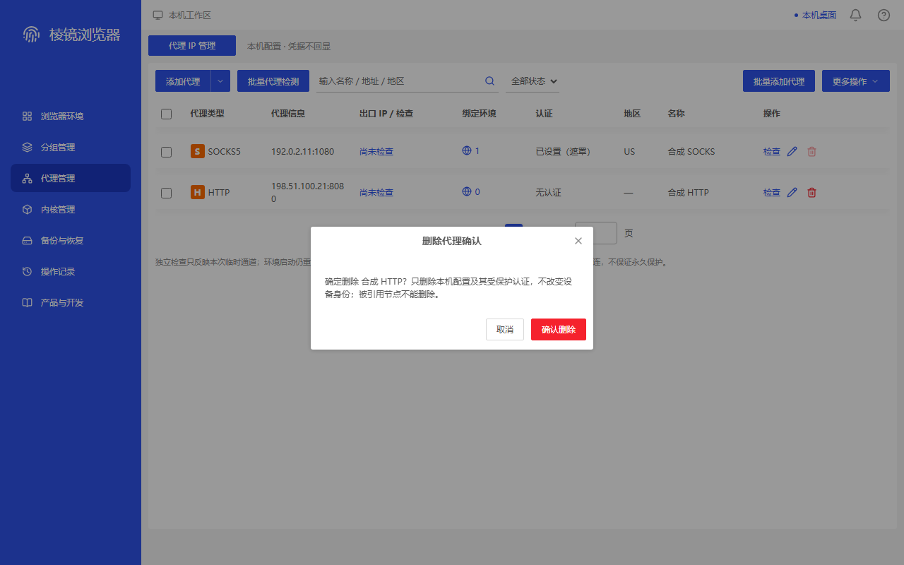
e1ef97deb47018971ce40397d9035b6334d2ae6790f75247f0bde47cbbc3daba
gap-proxy-delete-referenced-protection · 1280×800
MAPPED — Full PNG seen; G57 P15/r1. Actual container is the list: referenced node use-count1 and disabled delete, zero requests. Compare proxy-list, not metadata's group-delete-confirm as a same-operation match; no original proxy reference guard.
同类参考容器：group-delete-confirm；不是同名原商业执行。
34c092aa474b1ed6c1fba2b5613301f257d4045c6b46215db83b29336ca06462
gap-proxy-delete-refused · 1280×800
MAPPED — Full PNG seen; G58 P15/r2. 400px dialog shows refusal and unchanged node configuration after one synthetic Delete. Original group deletion is not this operation; safety/error copy explains increased height.
同类参考容器：group-delete-confirm；不是同名原商业执行。
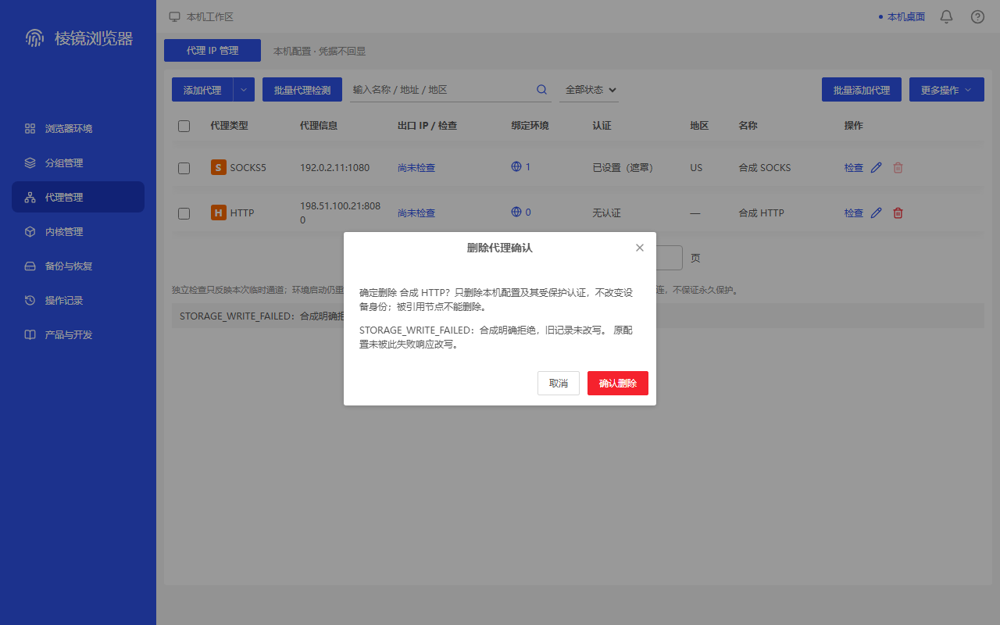
7302cf3d6e4caa2f1080f9001efc195015844d52f5768a537e6dbe2249eb1978
gap-proxy-delete-unknown · 1280×800
MAPPED — Full PNG seen; G59 P15/r3. After unknown-response reconciliation, one retained proxy row and deletion message are visible; two identical original Delete payload hashes. Captured resolved state is not a still-unknown dialog or real native deletion proof.
同类参考容器：group-delete-confirm；不是同名原商业执行。
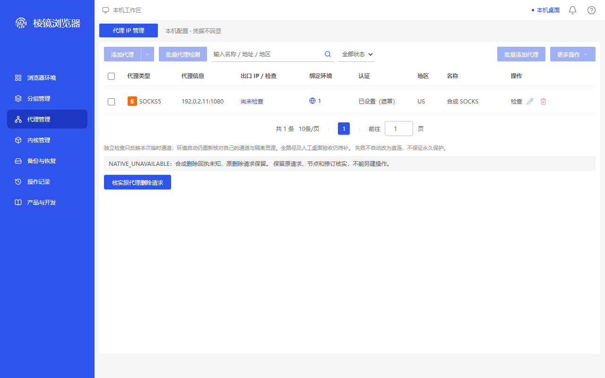
ce43b2709268c7715c480db79fe3a9309990ef28b52b33906706206772d1bc8b
gap-proxy-demo-add-menu · 1280×800
MAPPED — Full PNG seen; G60 P15/r4. Menu has single proxy, batch text, text-file import; no submitted action. environment-create-menu is a donor for anchored menu geometry, not the same proxy operation or commercial entries.
同类参考容器：environment-create-menu；不是同名原商业执行。
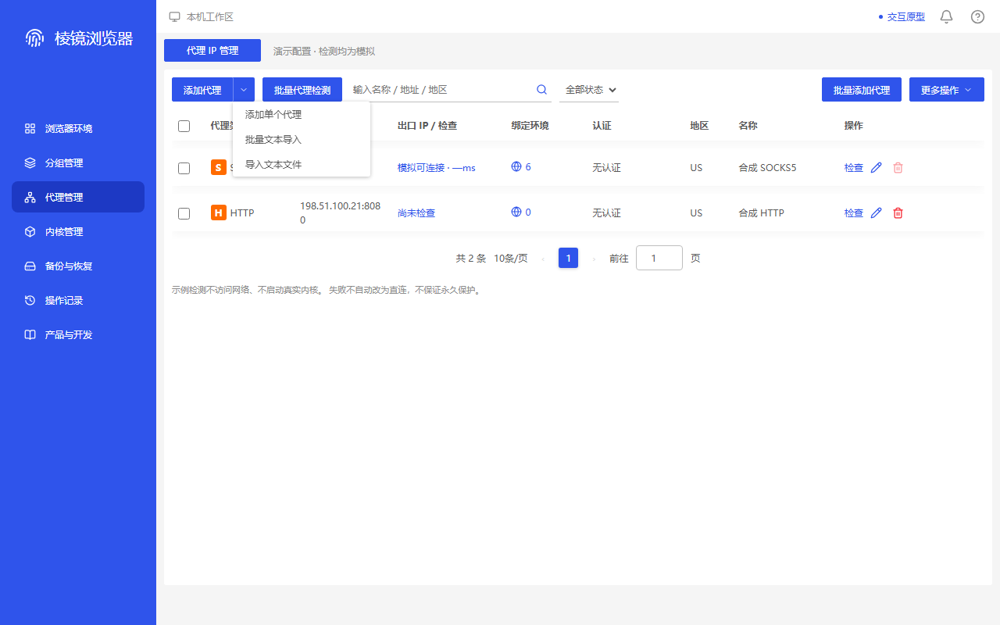
940ca8051644fa715cfe45d3344c96809666d138915650e69ea35d38e02c8995
gap-proxy-demo-edit-clear · 1280×800
MAPPED — Full PNG seen; G61 P16/r1. 620px edit form explicitly selects clear authentication, without old credentials; fixed footer and demo notice retained. Direct original parent form exists, but no original clear-auth variant; no save submitted.
同类参考容器：proxy-edit；不是同名原商业执行。
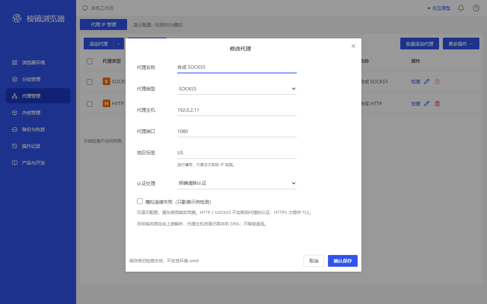
969cbd2de0929a61c7cc97cad7edb721e6eafb9136d8dcbf6016e8097167e564
gap-proxy-demo-edit-https-warning · 1280×800
MAPPED — Full PNG seen; G62 P16/r2. 620px edit form says HTTPS TLS to proxy and distinguishes unencrypted HTTP/SOCKS5 authentication; demo-only notice retained. Parent proxy-edit anchors layout, not this missing original protocol variant.
同类参考容器：proxy-edit；不是同名原商业执行。
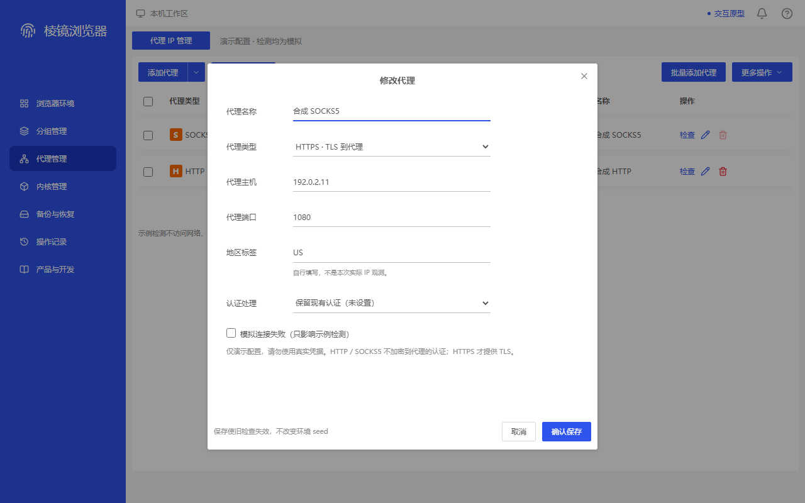
3a6eaf6a609ac318855b7e36728241b5f87fa20371bed2f973d07395327ff48b
gap-proxy-demo-edit-keep-auth · 1280×800
MAPPED — Full PNG seen; G63 P16/r3. 620px initial edit shows keep existing authentication (set), never old account/password. Region is self-labelled, demo failure checkbox preserved. Original edit parent is not the exact keep-auth safety state.
同类参考容器：proxy-edit；不是同名原商业执行。
9e386f4d62300601bcbf3771e31bcde78801948d36b1f8bbe21346a8ed0ffab9
gap-proxy-demo-edit-keep-no-auth · 1280×800
MAPPED — Full PNG seen; G64 P16/r4. 620px HTTP edit distinguishes keep authentication (not set) from clear/replace; no credentials invented. Parent form compared at the same viewport; exact original no-auth safety variant unavailable.
同类参考容器：proxy-edit；不是同名原商业执行。
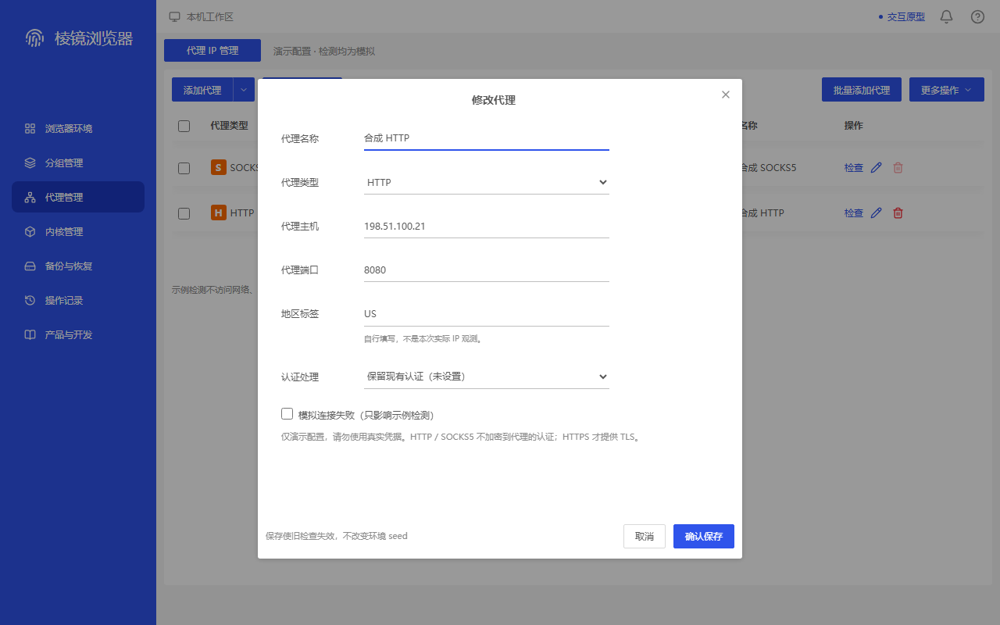
b7bb065d22ce1bdd60812a6ab5d1d2a62d9d2871778cd6f0240fdace288953d0
gap-proxy-demo-edit-replace-simulated-failure · 1280×800
MAPPED — Full PNG seen; G65 P17/r1. New account/password both masked, replace selected, demo failure checkbox visible. Body overflow is genuine, not a bottom capture; footer stays fixed. No original simulated-failure/replacement phase or submitted native save.
同类参考容器：proxy-edit；不是同名原商业执行。
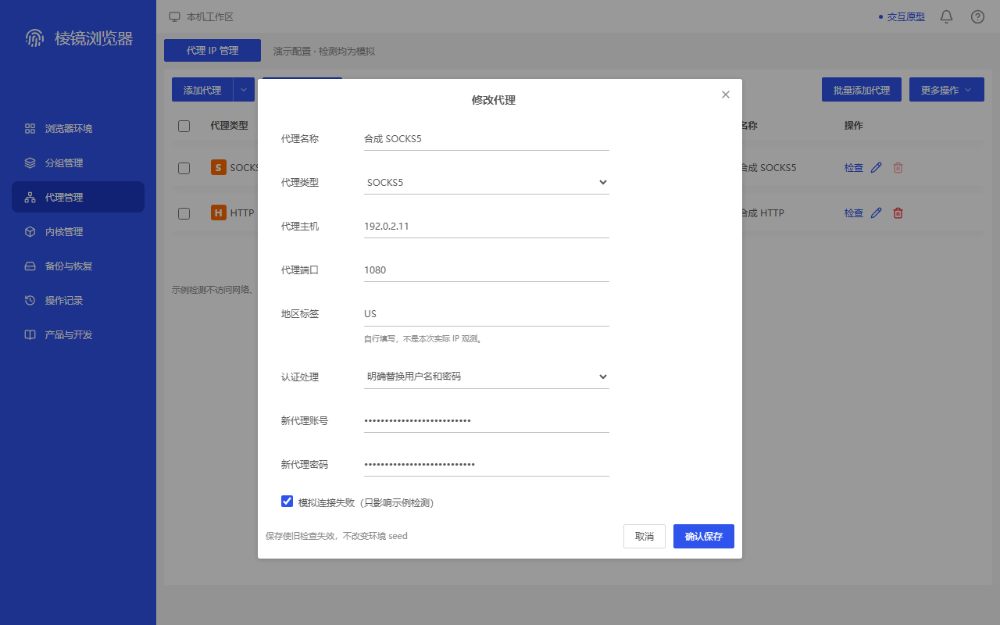
4ddce2fa63104059928f33630d22f9220c1819fb00107d58604dcb50bf21be9d
gap-proxy-demo-list-dense-bottom · 1280×800
FAIL — Full PNG seen; G66 P17/r2. Ten page1 rows from14 total push pagination to y770..818; buttons/input clipped by 800px viewport and boundary notice below it. Shared wrapper is unbounded; documentOverflow=false does not excuse this. Keep10/page and bound row scrolling.
同类参考容器：proxy-list；不是同名原商业执行。
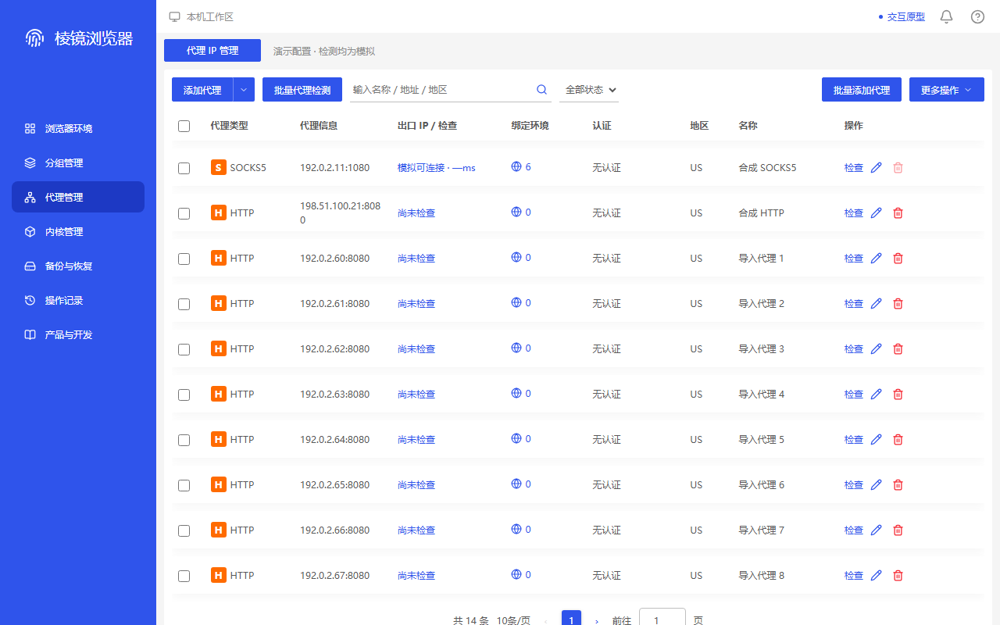
e0ce4e5fa2718fabe86c34baf8f0db1437b25f31f43ebc76bfc8725d9aab2310
gap-proxy-demo-list-dense-page-two · 1280×800
MAPPED — Full PNG seen; G67 P17/r3. Page2 has four rows, total14 and10/page; pagination and boundary fit. Original proxy-list has two baseline rows, not this dense final page; demo statuses are synthetic, not network checks.
同类参考容器：proxy-list；不是同名原商业执行。
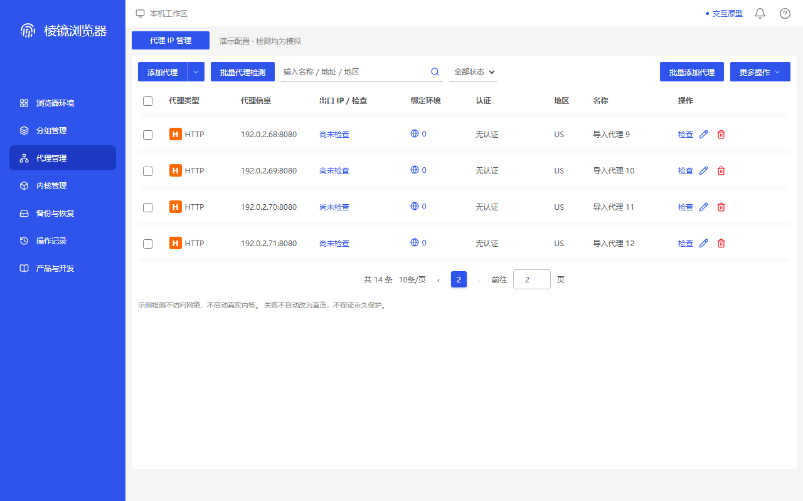
07fa727778375dc25d2763e1000cd0278cbbe7368853ad61de1a54a8a29e9d63
gap-proxy-demo-list-empty · 1280×800
MAPPED — Full PNG seen; G68 P17/r4. Empty table retains toolbar/header, total0 and page1; batch check disabled and add available. Original populated proxy-list only anchors geometry; no exact original proxy empty state.
同类参考容器：proxy-list；不是同名原商业执行。
dbc3fcfab85a564f4c3212ad50fa4f6eb2122768a23b2f8630449e6d4a4fd4bd
gap-proxy-demo-list-no-match · 1280×800
MAPPED — Full PNG seen; G69 P18/r1. Synthetic search returns0 while underlying two records remain; header/toolbar/pagination retained. No deletion or real check; original proxy no-match state unavailable.
同类参考容器：proxy-list；不是同名原商业执行。
8d2c2458a67b760b607226290a8c17ac9e07935cbd72e1be849a76bb9dffd62f
gap-proxy-demo-list-selected-scope · 1280×800
MAPPED — Full PNG seen; G70 P18/r2. Page2 four rows, one visible checkmark, two exact selected IDs across pages; cancel-selected2 and14 total consistent. Saved proof says selected scope, not all filtered14; no original cross-page proxy selection state.
同类参考容器：proxy-list；不是同名原商业执行。
fa51bce4edc270ba539122ef2830ed2e6773b3e95a34ab05037b8f87029b7800
gap-proxy-demo-list-status-filter · 1280×800
MAPPED — Full PNG seen; G71 P18/r3. Unchecked filter shows one HTTP row and total1, not two underlying records; pagination y248 fits. Original populated proxy-list does not prove this filtered variant; demo checks remain simulated.
同类参考容器：proxy-list；不是同名原商业执行。
50bdfc4048787644bae5009f6d0f3b4f2ab587f7b9373fdac5eede178aec6104
gap-proxy-demo-more-menu · 1280×800
MAPPED — Full PNG seen; G72 P18/r4. More menu contains only reread and clear filters; no action submitted. Different entries/anchor from environment-create-menu are an explicit local menu mapping, not strict same-operation evidence.
同类参考容器：environment-create-menu；不是同名原商业执行。
ce85cec958d6d4fd471d9586470a31fcec418355e5fbb453a588ae21f2492f17
gap-proxy-demo-single-authenticated · 1280×800
MAPPED — Full PNG seen; G73 P19/r1. 620px single-add form masks both new fields; preview only says authentication entered. Unselected parsed row leaves save disabled, commit0. Original add parent lacks this authenticated preview phase.
同类参考容器：proxy-add；不是同名原商业执行。
06e0b88cc1db36d5d9b4d6f23e3ac7e32f7b14032565cad7984c0bf92ef41455
gap-proxy-demo-single-existing-duplicate · 1280×800
MAPPED — Full PNG seen; G74 P19/r2. Masked single-add preview has one selected row and one existing duplicate node; duplicate is not silently discarded. commit0; original add parent has no corresponding duplicate preview.
同类参考容器：proxy-add；不是同名原商业执行。
33c1fce79ea09d45b4deadd71069f8edcd663fe3afcd7a1725d91d0c591a7f85
gap-proxy-demo-single-invalid · 1280×800
MAPPED — Full PNG seen; G75 P19/r3. Invalid host gives visible parse error and disabled save; new fields remain masked, commit0. 620px base add form compared, but original invalid parsing state not captured.
同类参考容器：proxy-add；不是同名原商业执行。
9dd83a80c5a7089ac715b439afa840796b60d896e59cdea23dd0c5999de6e3a1
gap-proxy-demo-text-dense-bottom · 1280×800
MAPPED — Full PNG seen; G76 P19/r4. 1050px text preview:12 valid,1 error,12 selected; tail rows10-13 visible and raw textarea masked. Real outer body628/668/top40, footer fixed. Original two-row preview is not a dense/scroll-phase counterpart.
同类参考容器：proxy-import-preview；不是同名原商业执行。
be7e926c7eec7fe0bf27ec63fe0cd53bc7b5063509448316f26a8b84b4da7b34
gap-proxy-demo-text-remainder-fresh-preview · 1280×800
MAPPED — Full PNG seen; G77 P20/r1. After saving only original line1, fresh remainder has11 valid,1 error,11 selected; raw text masked. Proof invalidates old preview, not duplicate rejection. Original two-row preview lacks this partial-save/reparse phase.
同类参考容器：proxy-import-preview；不是同名原商业执行。
fc90a858a3522ff1a9b2cdae846ee576a63a4e532ea41a6f99857f6424d20668
gap-proxy-demo-usage-dense-bottom · 1280×800
MAPPED — Actual dense inner-table bottom shows last demo rows016-022, selection10 and returned17/service17 with fixed readable confirmation. Eleven real demo creations, not backing-data fake scope; outer body fits at scrollTop0. Original1040x592 chooser container reused, new dense usage state mapped, no assignment or real browser success claim.
同类参考容器：proxy-bound；不是同名原商业执行。
7d4ab1941706c87d53649a8dd2423d0689b8a7cfe9379bccf17047ce78e78fc1
gap-proxy-demo-usage-dense-page-two · 1280×800
MAPPED — Final demo page returns17/service17 with seven checked selections asserted by acquisition and six simultaneous visible rows; seventh remains in real table scroll area. Previous/disabled-next/confirmation readable and footer shows7, not17. No missing-case invention, no binding commit inferred, original chooser container only.
同类参考容器：proxy-bound；不是同名原商业执行。
010fc03eb5622f27a00a293f187a8e020a9d6f151dfd16418ca3291f6956c89a
gap-proxy-demo-usage-empty · 1280×800
MAPPED — Full PNG seen; G78 P20/r2. 1040x592 usage frame has returned0/service0/selected0 and disabled page selection. Exact original bound frame is1040, not1050; original six-selected list is not this empty state; assignment0.
同类参考容器：proxy-bound；不是同名原商业执行。
0003ebc2c9f7751d11b6cfddda5476f00abfb25ac6e31dd291068b051e935e74
gap-proxy-demo-usage-no-results · 1280×800
MAPPED — Full PNG seen; G79 P20/r3. 1040px usage search shows0 matching rows but retains returned6/service6/selected0; no expansion or assignment. Original bound baseline anchors the frame, not this no-result filter state.
同类参考容器：proxy-bound；不是同名原商业执行。
5dae911b3c3905dbdaf74eb9a6b0ef998f965c9a8f0ae20824f309876f42c543
gap-proxy-dense-safe-report-bottom · 1280×800
MAPPED — Full PNG seen; G80 P20/r4. Tail of safe11-stage report reaches actual body654/1292/top638; 620px frame and confirmation fixed. No credentials/raw errors, explicit temporary-channel and TLS/no-direct-fallback boundaries. proxy-edit is not an original check-report operation.
同类参考容器：proxy-edit；不是同名原商业执行。
530f4221e33f38cdfd9bcde7727b8a0b69604dd0c473b498ca72aadfc78acca5
gap-proxy-edit-refused · 1280×800
MAPPED — Full PNG seen; G81 P21/r1. 620px edit shows storage refusal and retained draft/configuration, with one original-revision Update. Parent edit form exists but not original refused-save phase; identity retention proof is synthetic.
同类参考容器：proxy-edit；不是同名原商业执行。
1eff7093d21cbda8098d8ec04d3268486bbe7ff134808335d32d73081205a072
gap-proxy-edit-unknown-clear · 1280×800
MAPPED — Full PNG seen; G82 P21/r2. Clear action and fields frozen after unknown reply; footer verifies original save request. Route-return proof retains original ID/revision and two identical payload hashes, no new credentials. Original recovery state unavailable.
同类参考容器：proxy-edit；不是同名原商业执行。
4fb5bec9cdffb0cdcf8dc0c4be2b7652ec17f4a2b23ec6a3b87434aa311874b7
gap-proxy-edit-unknown-keep · 1280×800
MAPPED — Full PNG seen; G83 P21/r3. Keep-auth fields locked, old secrets absent, original-request verification footer available. Two equal Update payload hashes and route-return identity evidence are synthetic; original unknown-save counterpart missing.
同类参考容器：proxy-edit；不是同名原商业执行。
b999539a79890c37728aefcaee944d6f697b1c6e185bea33ab6c1a95771bbfc8
gap-proxy-edit-unknown-replace · 1280×800
MAPPED — Full PNG seen; G84 P21/r4. Native replace extends620px edit to726px; both new fields masked and frozen, verify-original footer visible. Body overflow23 at top0 is not a bottom claim. Original retry payload/identity retained; no original unknown-replace phase.
同类参考容器：proxy-edit；不是同名原商业执行。
7a3c83f0e1f7136bd6ac1d009ee355a67866d4beb656656ccac185fb8471f2e8
gap-proxy-native-add-menu · 1280×800
MAPPED — Full PNG seen; G85 P22/r1. Three local import choices, no submitted action or cloud/commercial purchase entry. environment-create-menu geometry donor is not a direct original proxy-add-menu state.
同类参考容器：environment-create-menu；不是同名原商业执行。
4a9295c34ff9a39353cb13b63fc9b1e6094b7db5ce2a0eb59c3be836eaae0e09
gap-proxy-native-bound-off-page-usage · 1280×800
MAPPED — 1040x592 at x120/y112 matches original binding-container geometry. Exact unselected synthetic-env-11/12 rows and unknown details visible; returned12/service30 and zero selection accurate, assignment disabled. Fixed confirmation readable; no service scope inflated or direct/running state invented, no preview/commit captured.
同类参考容器：proxy-bound；不是同名原商业执行。
f0f2474b986a87649229d667e8be6f1a31bbad679007c102a007cda42402b563
gap-proxy-native-duplicates-authenticated-groups · 1280×800
MAPPED — Full PNG seen; G86 P22/r2. 1050px preview shows3 valid/1 invalid/1 selected; lines1,2 duplicate group plus existing node, bad row disabled, selected line4 per proof. Raw textarea masked; extra row may scroll. Original two-row preview lacks these duplicate/auth groups.
同类参考容器：proxy-import-preview；不是同名原商业执行。
b8ca4a24b0b4ea450797b2981a04048a25566e6c32024c590be7f162feacd8dc
gap-proxy-native-edit-clear · 1280×800
MAPPED — Full PNG seen; G87 P22/r3. Reopened620px clear-auth form shows saved/old-check-invalidated message; one synthetic Update carries no new credentials. Original edit parent is not this completed-save/reopen phase; seed claim is not full native proof.
同类参考容器：proxy-edit；不是同名原商业执行。
721b650634a5330c58901cd75252586c246aa833ae2c363604fac5ea413421b7
gap-proxy-native-edit-https-warning · 1280×800
MAPPED — Full PNG seen; G88 P22/r4. 620px unsaved edit distinguishes HTTPS TLS-to-proxy from HTTP/SOCKS5; old secrets absent, controls/footer fit. No Update submitted and no direct original HTTPS safety variant.
同类参考容器：proxy-edit；不是同名原商业执行。
4974e6d5216a31d916984bc42ae63c76a30efd4ebc4429079ef8ef93d1738ebf
gap-proxy-native-edit-keep-auth · 1280×800
MAPPED — Full PNG seen; G89 P23/r1. Reopened620px edit keeps existing set authentication; no old credentials visible. One original-revision synthetic Update, old check invalidated notice; original post-save/reopen phase missing.
同类参考容器：proxy-edit；不是同名原商业执行。
448ffa1caf793d4b25883e3dffe93d309be0ca2d1229c457b23e035b0106374a
gap-proxy-native-edit-keep-no-auth · 1280×800
MAPPED — Full PNG seen; G90 P23/r2. HTTP edit explicitly keeps not-set authentication, not fake credentials; saved/reopened message with one synthetic Update. Exact original no-auth completed-save phase missing;620px parent form only anchors layout.
同类参考容器：proxy-edit；不是同名原商业执行。
dae123b0a4d24fc9446895550044f905a5efd9da05f4c2f9f6ecedb4895bb28f
gap-proxy-native-file-cancel-preserves · 1280×800
MAPPED — Full PNG seen; G91 P23/r3. 500px UTF-8 file form retains selected synthetic filename after cancellation; identical hash to selected-state PNG is honest preservation. Memory upload only, OS reads0/commit0; original picker-cancel phase absent.
同类参考容器：proxy-import-file；不是同名原商业执行。
e2cc4fd769654ddc0a211d7bcd62afa8331691c864e9afeb69ed0697c99b17c6
gap-proxy-native-file-invalid-utf8 · 1280×800
MAPPED — Full PNG seen; G92 P23/r4. 500px file form reports invalid UTF-8, no selected valid file, continuation disabled; error in fixed footer. Memory-only input, commit0; original Excel file container is not this validation phase.
同类参考容器：proxy-import-file；不是同名原商业执行。
aefa3663db4cdd9d8bfbf7ad385779317c73c598aa42350d5bdd8b85e4fe42ba
gap-proxy-native-file-locked-unknown · 1280×800
MAPPED — Full PNG seen; G93 P24/r1. Unknown original import leaves chooser/clear locked and recovery warning visible; filename field is not proof frozen text is absent. One commit and frozen input per synthetic proof, not a second import or native file read. Original unknown phase missing.
同类参考容器：proxy-import-file；不是同名原商业执行。
9764b8670210d7c0b80d175fe4a3f0b782aab80a7356d68e7c7807d800f8e321
gap-proxy-native-file-selected · 1280×800
MAPPED — Full PNG seen; G94 P24/r2. 500x360 UTF-8 file form names one synthetic text file and offers parsing before save; explicit2MiB limit and no commercial Excel/cloud API. Parent original file dialog exists, but selected local-text state has no exact counterpart; commit0.
同类参考容器：proxy-import-file；不是同名原商业执行。

e2cc4fd769654ddc0a211d7bcd62afa8331691c864e9afeb69ed0697c99b17c6
gap-proxy-native-file-too-large · 1280×800
MAPPED — Full PNG seen; G95 P24/r3. 500px file form rejects over2MiB input visibly; continuation disabled, error/footer not clipped. Original Excel donor differs in capability/limit; no same-phase original and no OS read or commit.
同类参考容器：proxy-import-file；不是同名原商业执行。
dbe3a9f2692132c7d48f0e272b17b57e7258c5b2781c3cfac129b6f88c64a7e0
gap-proxy-native-list-dense-bottom · 1280×800
FAIL — Full PNG seen; G96 P24/r4. Ten page1 rows from14 total; pagination y770..818 clipped at viewport800, native boundary below view, main height872. Same shared unbounded-table defect as demo. Preserve10/page, IDs and safety copy; bound row area, not fake bottom metadata.
同类参考容器：proxy-list；不是同名原商业执行。
d59755c8a7f98e15ea4693ceddcbfc7a20d434387fb9f6560ec0ec67800008d6
gap-proxy-native-list-dense-page-two · 1280×800
MAPPED — Full PNG seen; G97 P25/r1. Four final-page rows, page2/14 total/10 per page and full controls visible. Original proxy-list baseline lacks dense final-page state; stored synthetic status labels are not real checks or permanent protection.
同类参考容器：proxy-list；不是同名原商业执行。
3fefce3eea33f14734e3f6b545372131cfafe4f9a5cf46ce1346758495ee1671
gap-proxy-native-list-empty · 1280×800
MAPPED — Full PNG seen; G98 P25/r2. Total0/page1, empty message, header and add/import retained; batch check disabled. Native projection is synthetic. Original populated proxy-list is not an original empty native state.
同类参考容器：proxy-list；不是同名原商业执行。
09a4308f232fc5a3c3bbb5bd1871244344505bb5451b2b7c9077d64da35b7391
gap-proxy-native-list-no-match · 1280×800
MAPPED — Full PNG seen; G99 P25/r3. No-match search gives filtered0 without deleting underlying two nodes; toolbar/header/page controls retained. Original proxy-list is a geometry anchor only; no direct original no-result phase.
同类参考容器：proxy-list；不是同名原商业执行。
77b9e82d4477e5340e159ccabea60bbca02150c82f60f470b0d63b1c03cccd3c
gap-proxy-native-list-selected-scope · 1280×800
MAPPED — Full PNG seen; G100 P25/r4. Page2 shows one selected row while two exact IDs stay selected across pages; total14 and selected2 consistent. Synthetic accepted check scope is not all filtered nodes or launch permission. Original cross-page selection phase absent.
同类参考容器：proxy-list；不是同名原商业执行。
610f13ff7f7554329efe259632b62d55ed6b94d293e5fc82a7d2c1c45d83d10f
gap-proxy-native-list-status-filter · 1280×800
MAPPED — Full PNG seen; G101 P26/r1. Unchecked filter has two rows and total2; native credentials reduced to set/not-set, footer boundary retained. Unlike demo's one-row filtered result, these are the native fixture's values; no same-filter original counterpart.
同类参考容器：proxy-list；不是同名原商业执行。
60844bd66033e87c6be893e373351b2ddd4759f8474de64e449979f25859576f
gap-proxy-native-more-menu · 1280×800
MAPPED — Full PNG seen; G102 P26/r2. More menu has reread, existing local batch assignment, clear filters; action0. environment-create-menu donor has different entries/anchor and does not imply cloud privileges or a direct original proxy menu.
同类参考容器：environment-create-menu；不是同名原商业执行。
aea4e123f7572a8fdfeeaaa9958ca24a32855fae84a33a591ed36eec5e5916f2
gap-proxy-native-single-authenticated · 1280×800
MAPPED — Full PNG seen; G103 P26/r3. 620px add form masks both entered fields; safe authenticated preview has unchecked row/save disabled, commit0. Known base form compared but no original authenticated native parse phase or real credential-store proof.
同类参考容器：proxy-add；不是同名原商业执行。
aa7c89219cfab7231197aadc441d16e6880c99bc2cc72a23a51502d9ab333465
gap-proxy-native-single-existing-duplicate · 1280×800
MAPPED — Full PNG seen; G104 P26/r4. 620px single preview preserves selected duplicate row and existing-node count1 without echoing credentials; commit0. Original base add form has no matching duplicate/authenticated parse state.
同类参考容器：proxy-add；不是同名原商业执行。
892e201a95115db88f00203e32eb3bcf438efd49944dbd9d61cf7c484816745a
gap-proxy-native-single-invalid · 1280×800
MAPPED — Full PNG seen; G105 P27/r1. Invalid host gives safe localized error, no valid selected row/save, both credential inputs masked; commit0. Original add parent provides geometry but not this validation phase.
同类参考容器：proxy-add；不是同名原商业执行。
563bc5cc5a402813597ffdb54824e33f56f530d7d89f4e3a253cf96c5f631378
gap-proxy-native-text-dense-bottom · 1280×800
MAPPED — Full PNG seen; G106 P27/r2. 1050px preview shows12 valid/1 invalid/12 selected, tail rows10-13, masked raw text; body628/668/top40 is real bottom. Original preview has two rows, not this dense state; no credential echo or actual native commit.
同类参考容器：proxy-import-preview；不是同名原商业执行。
33ef9288512558f736c1623d7532e97c5f5cd04eb987810aed0d6a677ef9c689
gap-proxy-native-text-remainder-fresh-preview · 1280×800
MAPPED — Full PNG seen; G107 P27/r3. One synthetic original line committed, old preview invalidated; fresh remainder11 valid/1 invalid/11 selected and raw text masked. This is remainder parsing, not duplicate handling; original partial-save/retry state absent.
同类参考容器：proxy-import-preview；不是同名原商业执行。
1189cc605a6a5f0e648b38e844d12b926124c61bdbb93acb51c2e8335e5d2047
gap-proxy-native-usage-dense-bottom · 1280×800
MAPPED — Native outer body37/531/494 reaches real bottom; visible original IDs4-10, guarded exact page-one selection10 and service-partial warning12/30. Fixed footer actions clear. Upper search/header fragments intentionally scroll past body top, not lost controls; no scope expansion, assignment preview or native commit certification.
同类参考容器：proxy-bound；不是同名原商业执行。
7ca3c55318dd9e1f76b23878ba68fa669d8c06ce2e7d9b18d2e5e3472cf5025b
gap-proxy-native-usage-dense-page-two · 1280×800
MAPPED — Exact checked synthetic-env-11 and synthetic-env-12 visible, unknown-detail text truthful; footer selection2 distinct from returned12/service30. Final next-page disabled and assignment/confirmation readable. Native usage projection in original1040x592 chooser shell, not direct original behavior or successful binding proof.
同类参考容器：proxy-bound；不是同名原商业执行。
8bb5e62058fa2eebaa79309184a540ecd4a1ca647053bb8eb826d56fd9db83b8
gap-proxy-native-usage-empty · 1280×800
MAPPED — Full PNG seen; G108 P27/r4. Exact1040x592 bound frame has returned0/service0/selected0; assignment disabled, no submission. Original six-selected bound list is only a container anchor; empty state missing directly.
同类参考容器：proxy-bound；不是同名原商业执行。
491aaeee98a94b6950c22d2ac226067e99d4d83016bf77a71292808bfaa97825
gap-proxy-native-usage-no-results · 1280×800
MAPPED — Full PNG seen; G109 P28/r1. Usage search filters to0 rows but retains returned6/service6 and selected0; assignment disabled, frame1040 not1050. No original no-result usage variant or whole-workspace assignment proof.
同类参考容器：proxy-bound；不是同名原商业执行。
f818ea9d182359620db5a8c7ee99ff3afecfed41768113895c13cca181232fd1
gap-proxy-single-socks-byte-refusal · 1280×800
MAPPED — Full PNG seen; G110 P28/r2. 620px single form shows safe SOCKS username256-byte refusal against1-255-byte rule; credentials masked, parse1/commit0. Native validation is a synthetic projection, not actual native execution; original byte-limit phase absent.
同类参考容器：proxy-add；不是同名原商业执行。
0997ed69750668f01da3a00c5f136a0559672d5dcdc34aa97bba4c143a880893
gap-kernel-accepted-refresh-fault · 1440×900
FAIL — F01: top 500px workspace blocker has unreadable white-on-#eee recovery primary button, falsely resembling disabled styling. Frozen styles.css:223 neutral first-button rule overrides primary background. Accepted exact task remains under blocker, one install/no unknown replay, single effective mask and top focus are correct; not a functional recovery failure claim.
同类参考容器：batch-progress-fixture；不是同名原商业执行。
8c42f88e44949c040029508daf428da5f58f67e8cebd164e46eb39d110377cc6
gap-kernel-accepted-refresh-recovered · 1440×900
MAPPED — 400x328 task container maps original result width with extra safe task content. Same owned synthetic-gap-kernel-install-1 after real held-reread release/route return; accepted 1/completed 0/failed 0, clear close/cancel. One install, not admitted placeholder or installed build. Earlier red read-failure toast remains visible; no direct original recovery behavior.
同类参考容器：batch-progress-fixture；不是同名原商业执行。
ab092b4881ad93d140ca08f2b1ee852810593379875200143914329bda8233ec
gap-kernel-delete-completed · 1440×900
MAPPED — 400×328、x520/y294、header40/footer58，准确合成移除任务完成1、关闭可见；灰说明仍为先前受理提示，不代表新的受理或运行。非原批次打开业务，不证明真实删除目录；与另一视口消息长度分开绑定。
同类参考容器：batch-progress-fixture；不是同名原商业执行。
59de691df2b0c8fea041dfc9b281e8d915411201abff2425f1fbb47627dff41b
gap-kernel-delete-refused · 1440×900
MAPPED — 400×222、x520/y347、footer y511/h58；精确构建范围、保留构建/确认移除及明确拒绝完整，旧构建与默认未改。只借原400px短确认，不是原分组删除业务或真实删除试验，没有虚构成功任务。
同类参考容器：group-delete-confirm；不是同名原商业执行。
33d42e9eab1fa4765f927566b87f5855f61416bf96548a0d732c6a01a0a711de
gap-kernel-delete-unknown · 1440×900
MAPPED — 列表保留两构建和原默认，受理未知说明与核实原内核请求完整，没有新任务臆造。相同ID/payload核实准确移除请求；画面与复验未知相同但合同动作不同，只借原容器，不认证真实移除。
同类参考容器：group-delete-confirm；不是同名原商业执行。

725d3cb2b068562a55540e5b2806a1eac8ed6caa88168441c246f885873749ec
gap-kernel-demo-capability-bottom · 1440×900
MAPPED — 660px主drawer、x780/top40/bottom8、header40/footer71，正文741/741/top0，自然内容完整，关闭和能力层说明可见；不代表经过密集长内容滚底。演示未真实安装且无伪造observedFingerprint，原编辑drawer仅容器映射。
同类参考容器：environment-edit；不是同名原商业执行。
0eab33167345bdfbe48604c5fe9280972f1296c445ae1438a36d2e3aa4f5ab19
gap-kernel-demo-capability-dense-bottom · 1440×900
MAPPED — 660px right drawer at y40/bottom8 maps environment-edit. Actual core-148 import/restore note has 24 independent explanations; final explanation, truthful demo capability boundary and fixed confirmation visible. Body 219/960/741 reaches real bottom. Transient restore-success toast overlaps heading, not close/footer; not pixel PASS or installation proof.
同类参考容器：environment-edit；不是同名原商业执行。
08ebc724d803a79f4e70f481753d187a274cb480d9f176c1b9ac43ccd4735f4c
gap-kernel-demo-list-dense-bottom · 1440×900
MAPPED — 12条demo记录、第一页10行，表头y140/h40、白行48/间隔10、分页y770/h48及底部说明均完整；恢复通知不是安装成功。只映射原代理表容器，没有同名原密集内核页；不把可见分页说成固定分页或代替小视口FAIL。
同类参考容器：proxy-list；不是同名原商业执行。

a51874f73d5ab85cb73e1b21415a6fbcfe537e362fb3c11d9f416aaf1c1f33fc
gap-kernel-demo-list-dense-page-two · 1440×900
MAPPED — 恢复后12条演示构建、第2页只有末两项，页2标记、能力详情及不会下载/安装说明完整。原代理列表是不同内容和页态，只有容器映射；10条/页不是产品数量配额，没有真实内核登记冒充。
同类参考容器：proxy-list；不是同名原商业执行。

1d3555e070c4dd9ea78ef0c97bad26249abe55613200248a5b5f518c3976c022
gap-kernel-demo-list-empty · 1440×900
MAPPED — 显式兼容demo恢复后0条，工具条、空态说明及分页保留；共享空文案谈真实内核准备，但页标和底部边界明确演示，不认证真实安装。与原非空代理列表及缺失的native空态均不同，只作容器映射。
同类参考容器：proxy-list；不是同名原商业执行。
14cef07e6f7848878721c0dfbe6bc78db8c5f1d03c7943c8df8fa53764b407b6
gap-kernel-demo-list-no-match · 1440×900
MAPPED — demo搜索条件、没有匹配内核、40px表头、0条分页和非真实安装边界完整，无修改提交。与恢复后的空库存分开；原参考只是非空代理表容器，不存在同名内核查询原画面。
同类参考容器：proxy-list；不是同名原商业执行。
55f3f0c1b01f7cb0b208dc109afc1c7300a034abedfec15c82898fb8da8898af
gap-kernel-demo-list-unavailable · 1440×900
MAPPED — 不可用/待验证只剩150演示元数据，未核验摘要及没有真实程序摘要说明、能力详情、分页完整。没有把筛选解释为真实核验执行或已安装；原代理列表只提供表容器，不是直接原业务。
同类参考容器：proxy-list；不是同名原商业执行。
beeb2b4c422bc83d7a0731eab9a45d81a4038f9a99e2a9173369c81ca4782765
gap-kernel-history-empty · 1440×900
MAPPED — 620×540、x410/y188，正文442/442/top0、footer y670/h58；历史表头、暂无持久内核任务记录与确定可见，无新核验/安装。只借原代理编辑容器，不是原同名内核历史。
同类参考容器：proxy-edit；不是同名原商业执行。
60d1414de7b4442edc659141c2f6d96cc3c1541dcd20c5c271235036af0a1b33
gap-kernel-history-expanded-bottom · 1440×900
MAPPED — 620×540历史窗，正文442/1518/top1076等于实际最大值，末条及footer y670/h58完整；12条展开合成报告，没有新安装/核验。seed和实际版本字段只是合成样本，不认证真实探针，仅原编辑容器映射。
同类参考容器：proxy-edit；不是同名原商业执行。
6c3ed0a690192d0cd1ca09f006ae7a3f02904ea81525123139652db1216efcee
gap-kernel-history-expanded-top · 1440×900
MAPPED — 620×540、x410/y188，正文442/1518/top0，首个任务与展开技术行可读，长内容独立滚动、确定固定可见。12条合成历史和采样不是实测seed/探针，也非原代理编辑业务，仅容器映射。
同类参考容器：proxy-edit；不是同名原商业执行。
dcbefefa22d86166e0020b52f6ecec21df3a17e7b77238dd07e91c383e6ecfaa
gap-kernel-history-select-exact · 1440×900
MAPPED — 实际选第12个准确历史任务后400×284、x520/y316，受理1/完成1/失败0及唯一关闭完整，未发起新安装/复验。历史选择不是执行证明，原代理编辑只作为结果容器映射，非同名直接参考。
同类参考容器：proxy-edit；不是同名原商业执行。
db3f378f774a0e08b08d39794bd566bce40f58026fd8e73509a62fa60f6aab69
gap-kernel-install-local-unknown · 1440×900
MAPPED — 620×530、x410/y193，正文432/432/top0、footer y665/h58；原合成本地选择和信任保留，未知原请求提示与核实按钮完整。同ID/payload调用不建假任务，无真实OS选择或安装；只是原添加表单容器映射。
同类参考容器：proxy-add；不是同名原商业执行。
67b7b7e0d5b43e495e53d3f3d954ea3251d5a55f51ce1afa23f18962b64fe675
gap-kernel-install-malformed-receipt · 1440×900
FAIL — V-KERNEL-REQUEST-HINT-CLIP：620×420、x410/y248，正文322/346/top0、footer y610/h58，未知原请求提示末行被截。畸形回执没有假任务、同ID/payload核实正确，但不能认证这张顶部安全错误态完整；不声称文字永久无法滚到。
同类参考容器：proxy-add；不是同名原商业执行。

b95547080bf71fad43b7dd11115f3bbfddc7de0a34456beaeee208ad90cc1c3e
gap-kernel-install-official-unknown · 1440×900
FAIL — V-KERNEL-REQUEST-HINT-CLIP：官方受理未知620×420、正文322/346/top0、footer y610/h58，灰色原请求提示求。末行被截。与畸形回执同视口同画面但不同合同记录；未知不建任务正确也不能代替读得完整的顶部错误证据。
同类参考容器：proxy-add；不是同名原商业执行。
b95547080bf71fad43b7dd11115f3bbfddc7de0a34456beaeee208ad90cc1c3e
gap-kernel-install-original-replay-accepted · 1440×900
MAPPED — 原未知请求核实后准确任务1已受理；400×328、x520/y294、header40/footer58，等待执行、受理1/完成0/失败0及关闭/取消完整。受理不是安装完成，仅原批次结果容器映射，未验证真实下载/内核。
同类参考容器：batch-progress-fixture；不是同名原商业执行。
6ac6799a8e369c970453eeaa93d538064b5bc90d52b5fd3385df4c6466ba8253
gap-kernel-install-phase-acquiring-archive · 1440×900
MAPPED — 400×328、x520/y294、footer y564/h58，取得精确归档并校验摘要阶段、准确任务和完成0可读。仅有限合成阶段回复，旧环境构建不变；不是本次真实网络下载正在执行，没有原同名业务。
同类参考容器：batch-progress-fixture；不是同名原商业执行。
b598a85a764bcbfdb8ef49698623e682a58a416e8ce2adc46c0a78e55e7fb624
gap-kernel-install-phase-completed · 1440×900
MAPPED — 400×346、x520/y285、footer y573/h58，合成持久完成1、失败0及关闭完整，边界说明不是新桌面验收，旧环境构建不变。与待保存保护态区分；不证明真实安装/探针，仅原结果容器映射。
同类参考容器：batch-progress-fixture；不是同名原商业执行。
aab27b6392d6c7d6a3ab4523bb53109a6c0a6f02ca9ed7193694c005d8a72fe5
gap-kernel-install-phase-extracting · 1440×900
MAPPED — 400×328、x520/y294，安全暂存解包阶段、受理1/完成0/失败0与关闭/取消完整，footer y564/h58。仅合成任务状态，旧构建不变，没有本次真实解包/目录I/O；原结果容器不是同名原内核业务。
同类参考容器：batch-progress-fixture；不是同名原商业执行。
6125807f6498d33dc3ed587496ac57ba5a9c9d60ad103b827daea6974576c6ce
gap-kernel-install-phase-probing · 1440×900
MAPPED — 400×328、x520/y294，隔离探测身份/参数阶段、任务ID、完成0及footer y564/h58完整。合成有限回复不代表真实探针或observed指纹，旧构建未换；仅映射原结果容器。
同类参考容器：batch-progress-fixture；不是同名原商业执行。
a15c6f70ef274d79ce4512caac2f349cbd123bf7946c5bc835e5828d6b45aab7
gap-kernel-install-phase-publishing · 1440×900
MAPPED — 400×328、x520/y294，发布不可替换的新内核ID阶段及完成0完整，关闭/取消可读。不是本次已登记真实构建，也未改旧环境引用；合成阶段和原400px结果仅容器映射。
同类参考容器：batch-progress-fixture；不是同名原商业执行。
b86c14b01c6c4e3fe2290d4c1ac2038a450809eae6cd433f095a25d9a232ab9c
gap-kernel-install-phase-queued · 1440×900
MAPPED — 400×328、x520/y294，已受理等待执行、任务1、受理1/完成0/失败0与关闭/取消完整。合成queued不是安装完成或可用，旧构建未变；原批次结果只提供几何容器，没有同名内核原画面。
同类参考容器：batch-progress-fixture；不是同名原商业执行。
8306078ba4f0558fde57227581731a93c4e329488bdc553cc14fad8cace5d0b5
gap-kernel-install-phase-verifying-extracted-files · 1440×900
MAPPED — 400×328、x520/y294，锁定解包文件并复核全部摘要阶段、完成0及footer y564/h58可见。仅合成合同回复，旧构建保持；未执行本次真实文件锁/目录核验，不能当原结果业务直接复刻。
同类参考容器：batch-progress-fixture；不是同名原商业执行。
db49c16edfbaca1a21bdae9b4118e61a81834a9ba8e4e9ecea31314087e3d2c6
gap-kernel-local-chooser-cancelled · 1440×900
MAPPED — 620×530、x410/y193、footer y665/h58完整，第二次合成选择取消后原token/可信勾选保留，安装0。不是OS选择器或已运行安装被取消；与原添加代理只共享620px表单容器。
同类参考容器：proxy-add；不是同名原商业执行。
18a9bf5eaf5ebac80103f9821eb3534b8581a97816362b8c222b5f89489964d0
gap-kernel-local-chooser-refused · 1440×900
MAPPED — 620×530、x410/y193，新选择拒绝提示、旧合成选择与可信勾选完整，安装0。新回复没有token不等于旧token被丢；无OS选择或真实安装，仅原添加表单容器映射，非原代理业务。
同类参考容器：proxy-add；不是同名原商业执行。
ddf4850435c73f4672d7a28ce2fb9b646cb9fcbcf34362eadb10c4534efb6242
gap-kernel-local-chooser-unknown · 1440×900
MAPPED — 620×530、x410/y193，选择未确认说明、旧合成选择及信任可读，footer y665/h58完整；2次选择/0安装。没有推断新文件已选择或真实安装正在执行，仅借原添加表单容器。
同类参考容器：proxy-add；不是同名原商业执行。
f2da9c5cf97e8b5940d26482a229fbc5a1b2a9e3fc6e7e5c02a0224d20645ea6
gap-kernel-local-invalid-fields · 1440×900
FAIL — V-KERNEL-VALIDATION-POPUP：无效版本/摘要和版本焦点正确、安装0，但原生校验气泡文字/警告图标极淡，不认证稳定可读错误态。620×530/header40/footer58无切边；这是本PNG捕获状态问题，不推断App永久低对比度或真实安装能力。
同类参考容器：proxy-add；不是同名原商业执行。
bc631f8e349c2edd1241c8b3aa5c9005b7dbbfd2798fac9c7090d7c338f172a8
gap-kernel-local-selected-reset · 1440×900
MAPPED — 620×530、x410/y193，新合成ZIP替换选择后可信勾选清空、安装并核验禁用，2次选择/0安装及footer y665/h58完整。无真实OS选择或安装；本机安全分支不是原添加代理业务，只映射容器。
同类参考容器：proxy-add；不是同名原商业执行。
081fe182113c324d3f41502864c8ce32986e05874294f2fa09606e111922a2fa
gap-kernel-native-default-change · 1440×900
MAPPED — 后续新建默认标记到合成B，原构建行、分页及范围说明完整；单次准确SetDefault请求，旧环境seed/构建/代理未变。不是升级旧环境或真实native持久化验证，与原代理页只有列表容器对应。
同类参考容器：proxy-list；不是同名原商业执行。
6b7d93c9aa5da5eebd809cf31c865c0cd338149725a3620fbf6f39a5d8ee5ae0
gap-kernel-native-default-manual · 1440×900
MAPPED — 新建时手动选择的默认更新说明、两行无当前默认标记及分页完整；原环境seed/构建/代理未改。不把手动选择当待验证内核可用或执行成功；只有合成回执和原列表容器映射，非真实默认事务验收。
同类参考容器：proxy-list；不是同名原商业执行。
287d155f4b152d6d995c1dce56f6e72bd9b11a95990af81d49e533bca3136645
gap-kernel-native-default-unknown-replay · 1440×900
MAPPED — 默认未知请求以同ID/payload核实后B默认及更新说明完整，旧环境seed/构建/代理保持。只限合成往返，不认证真实native事务或升级；原代理列表容器不是同名内核默认业务。
同类参考容器：proxy-list；不是同名原商业执行。
ebcfc2a7196b8982a3f4699c1acc798878eadc32247753194ebe36d8373b329d
gap-kernel-native-default-unknown · 1440×900
MAPPED — 默认提交未知提示与核实原默认请求可见，刷新读到B默认不等于该回执成功；准确原请求及旧环境seed/构建/代理保留。表头40/白行48和分页完整；仅原列表容器映射，未验证真实默认更新。
同类参考容器：proxy-list；不是同名原商业执行。
ae01755aef58a72d91722af47899ff8ab4f08faf73bbd46bcb87089787d4e58b
gap-kernel-native-list-dense-bottom · 1440×900
MAPPED — 合成12条/当前10行，表头y140/h40、白行48/间隔10，分页y770/h48和底部能力边界说明可见。只借原代理列表，不是同名密集内核原态；不宣称分页固定或真实核验，也不替代小视口裁切FAIL。
同类参考容器：proxy-list；不是同名原商业执行。

0719b36d06a776908a8760d52329a42e51ecdebc1c4d46a3813a5908faa7919f
gap-kernel-native-list-dense-page-two · 1440×900
MAPPED — 12个合成构建第2页仅末两条，页2标记、精确行资格及能力边界完整，原默认不在本页。10条/页不是产品数量配额；原代理两条第一页不同业务，只映射表容器，不认证真实内核服务。
同类参考容器：proxy-list；不是同名原商业执行。

74e439c74fc725336bfe0cb91ffe8100d08dc2e0399153857fb72d3eb74de7c5
gap-kernel-native-list-empty · 1440×900
MAPPED — Actual empty native list in original proxy-list management container. Empty message, zero pagination count and prepare/manual-default/read controls remain clear; valid complete Workspace.Read projection, no blocker or fake installed build. No direct original kernel-empty behavior exists.
同类参考容器：proxy-list；不是同名原商业执行。
fbf82b8fb54ae313e349c382dad30e20b9dc9561ebccf519a304241692715f16
gap-kernel-native-list-no-match · 1440×900
MAPPED — 搜索无匹配但准备/读取等入口、表头、搜索词和0条分页保留，无修改或新任务。既不是原代理非空业务也不是native空库存；只限合成筛选与原管理表容器映射，不认证真实查询。
同类参考容器：proxy-list；不是同名原商业执行。
84a700242f68b4579f485e5d273e2e43620782b76e4686aaca03cffb2c5fd98b
gap-kernel-native-list-unavailable · 1440×900
MAPPED — 不可用筛选仅B合成核验失败行，设默认禁用，复验/能力详情及分页完整；没有把失败构建说成可用。现有精确动作可见不是本次真实核验执行，原代理列表只作为容器参考。
同类参考容器：proxy-list；不是同名原商业执行。
d195aaece7ed05f3b13960c29afedcb06d1699d0d25bcf35ff42fc51b575be70
gap-kernel-read-error-retains-task · 1440×900
MAPPED — 400×346、x520/y285，STORAGE_READ_FAILED及保留原任务说明完整；准确原任务仍queued/完成0，关闭/取消可见，没有重放安装。读失败不等于任务终态失败，只借原结果容器，未验证真实读取/恢复。
同类参考容器：batch-progress-fixture；不是同名原商业执行。
06d8b94d5a5e99d754d4e13ea1cae1c774e176c30375842e97f967fb47b04249
gap-kernel-task-cancel-requested · 1440×900
MAPPED — 400×328、x520/y294，取消请求准确指向原任务1，当前仍queued/已受理等待执行，取消按钮禁用、完成0。请求标记并不等于已取消终态；仅合成合同状态及原结果容器映射，不认证真实取消。
同类参考容器：batch-progress-fixture；不是同名原商业执行。
6d6355eede33cd2707a15c90d2ae028930d4d28941c112baea43b51bb9ffe8dd
gap-kernel-task-cancelled · 1440×900
MAPPED — 400×328、x520/y294，原任务已取消、完成0，关闭/重新准备及footer y564/h58完整。先前受理说明仍保留，不写成新任务或完成安装；只有合成取消回执，与原结果容器内容不同，非真实取消验收。
同类参考容器：batch-progress-fixture；不是同名原商业执行。
94797c0848241a8574fac80d785a8a1767a5d3343cc7cf75ef3a16dcca45115b
gap-kernel-task-interrupted · 1440×900
MAPPED — 400×394、x520/y261，任务中断、具体APPLICATION_INTERRUPTED、失败1和重新准备完整，footer y597/h58。本视口灰说明也已变为中断错误，较小视口多18px；只限合成任务状态，不把历史受理或原结果容器当实际执行。
同类参考容器：batch-progress-fixture；不是同名原商业执行。
ebbe644a9465d5743a25ffb84cace4506766a2cc094f9e4f670d7edc1f9ebbc9
gap-kernel-task-persistence-blocked · 1440×900
FAIL — V-KERNEL-PERSISTENCE-LABEL：400×358、x520/y279，顶部和下层入口已完成与完成0、红色结果待保存/尚非持久终态同时出现，取消禁用。原任务保护正确也不能放行矛盾状态；应让待保存标签优先，不把合成保护态隐藏成普通成功。
同类参考容器：batch-progress-fixture；不是同名原商业执行。
5b283715b1fa3ec35999b7fa05835a5aaf88aa8cf087bd79ab4184b30c5d9d68
gap-kernel-task-unknown · 1440×900
MAPPED — 400×346、x520/y285，取消回执未知说明、原准确任务ID及queued/完成0可见，关闭/取消完整。未知没有被写成已取消或任务失败；只借原结果容器，继续核实原任务，不证明真实native控制成功。
同类参考容器：batch-progress-fixture；不是同名原商业执行。
a52fa878831dae49fa6ada05923857f979d0ace679025a3427a674a35404461e
gap-kernel-terminal-retry-late-receipt · 1440×900
MAPPED — 400×328、x520/y294，当前任务2准确可见、queued/完成0完整；新请求重试相同精确构建，旧任务1迟到读取未替换新所有者。只限合成actionProof和本图，不认证真实异步运行、网络或原同名业务。
同类参考容器：batch-progress-fixture；不是同名原商业执行。
e70a740df42248279af11b71ee5bd835cccae3df5dcdcd8589fd67e27da32010
gap-kernel-verify-completed · 1440×900
MAPPED — 400×346、x520/y285，准确合成复验任务完成1/失败0、唯一关闭与不是新桌面验收说明完整。旧构建保护未改，合成持久回执不能代替真实文件/内核探针结果；原结果窗口仅为容器映射。
同类参考容器：batch-progress-fixture；不是同名原商业执行。
4d21d3fdc8286d186ec39f1815ddec586709204cd74207dd8ddaca666e352b61
gap-kernel-verify-phase-verifying-files · 1440×900
MAPPED — 400×328、x520/y294，核验既有文件摘要阶段、准确复验任务、受理1/完成0/失败0及关闭/取消完整。只有有限合成阶段回复，并未执行本次真实文件核验；无同名原业务，仍为结果容器映射。
同类参考容器：batch-progress-fixture；不是同名原商业执行。
89bdd49f25204f0cef42ef6770a548757ad5091e7e752dec0f37257f03f60427
gap-kernel-verify-refused · 1440×900
MAPPED — 两构建、原默认及KERNEL_INTEGRITY_FAILED明确拒绝说明完整；准确复验请求被拒，旧记录未改、没有新任务成功。不是本次真实探测得到的失败；仅原代理列表容器映射，没有同名原复验业务。
同类参考容器：proxy-list；不是同名原商业执行。
3b477d92ea7a9f36c8499c42e922fb3c94896040c8cadb03b0439af3fd3fde73
gap-kernel-verify-unknown · 1440×900
MAPPED — 复验受理未知说明与核实原内核请求完整，准确原ID/payload保留，无虚构新任务或默认变化。与移除未知画面相同但合成请求不同；仅列表容器映射，不认证真实复验、文件读取或正在执行内核。
同类参考容器：proxy-list；不是同名原商业执行。
725d3cb2b068562a55540e5b2806a1eac8ed6caa88168441c246f885873749ec
gap-proxy-check-row-authentication · 1440×900
MAPPED — Full PNG seen; G161 P41/r1. Authentication stage remains active, Check/Edit disabled, Cancel visible and no exit IP. Same-view original proxy-list lacks this task phase; temporary synthetic check is not launch/native acceptance.
同类参考容器：proxy-list；不是同名原商业执行。
b16cc7184d0091a77184d8c8917ee4998e9960b413f1cc11ac6fbd330a117a28
gap-proxy-check-row-cancel-requested · 1440×900
MAPPED — Full PNG seen; G162 P41/r2. Cancellation requested while queued original task remains; Cancel disabled, no completed-cancellation fiction. Original proxy-list is a container anchor only; no original cancel-phase screenshot.
同类参考容器：proxy-list；不是同名原商业执行。
f87db27e75a2da623cdb88c0be52bce4057cadf6d933ea77373252c6d255c6ab
gap-proxy-check-row-persistence-pending · 1440×900
MAPPED — Full PNG seen; G163 P41/r3. Result pending save is explicitly labelled; no durable-success/IP claim, Check/Cancel disabled. No same-phase original counterpart; preserve original operation rather than converting pending to success.
同类参考容器：proxy-list；不是同名原商业执行。
dfc348959e6b852bf9555ad164a6ff5e62aa373fda02c0659c03d8c439e2e810
gap-proxy-check-row-queued · 1440×900
MAPPED — Full PNG seen; G164 P41/r4. Queued original task, Cancel available, row mutations disabled, other node retained. Original list parent anchors frame/rows but does not document this active queued state.
同类参考容器：proxy-list；不是同名原商业执行。
c95fc5a790e9c6023bff83e601a70f4751b0f59cfce0331716101f335ba9580f
gap-proxy-check-row-read-error · 1440×900
MAPPED — Full PNG seen; G165 P42/r1. Read-unconfirmed message and queued task retained; no invented safe report or exit IP. Direct original read-error/report-unavailable phase missing; recorded UI projection is synthetic only.
同类参考容器：proxy-list；不是同名原商业执行。
3a12789d2ab5e6fadc71a21fe0e89c59a22849653648c1e4c95a719bff52622f
gap-proxy-check-row-target-tls · 1440×900
MAPPED — Full PNG seen; G166 P42/r2. Target TLS stage, active Cancel and disabled mutations are visible, not a success IP. Original proxy-list has no direct TLS execution phase; encryption/launch acceptance remains unverified.
同类参考容器：proxy-list；不是同名原商业执行。
f51d02314b5a71c3908e8fe27e6f18eec93625dd87fb90119323729ce2b1411f
gap-proxy-check-row-unknown · 1440×900
MAPPED — Full PNG seen; G167 P42/r3. Original unknown check reconciled with two equal payload hashes; screenshot shows accepted queued task, not completed or still-unknown state. Missing direct original recovery phase; unchanged identity is synthetic proof.
同类参考容器：proxy-list；不是同名原商业执行。
503de4c8272f278ee37bd02d16dbf66e7dad05486adbdb4f6e840ddb24df020c
gap-proxy-delete-confirm · 1440×900
MAPPED — Full PNG seen; G168 P42/r4. 400px proxy confirmation has reference/identity protection copy, Cancel/Confirm and delete0. group-delete-confirm is a different operation, not a strict original proxy deletion counterpart.
同类参考容器：group-delete-confirm；不是同名原商业执行。
5d6bc4b52d11896b992484e770051505eabb402579b90c65112682c0cec08349
gap-proxy-delete-referenced-protection · 1440×900
MAPPED — Full PNG seen; G169 P43/r1. Actual list shows referenced node count1 and disabled delete, zero requests. Use proxy-list for actual container analysis; metadata's group-delete-confirm does not supply an original reference guard.
同类参考容器：group-delete-confirm；不是同名原商业执行。
6aef3701b94c5643dd52e64908bd89cf3ed09b73d2caa4d80f9ef1600d3ac7db
gap-proxy-delete-refused · 1440×900
MAPPED — Full PNG seen; G170 P43/r2. Refused synthetic Delete leaves original node and400px dialog, with visible error and usable footer. Taller safe copy is explained; original group deletion is not this refused proxy operation.
同类参考容器：group-delete-confirm；不是同名原商业执行。
dd8b9dc4df6542c2587c332b5dafc123e9b750a1e79c8934e59af05721e1cb59
gap-proxy-delete-unknown · 1440×900
MAPPED — Full PNG seen; G171 P43/r3. Resolved original Delete retry leaves one proxy row and deletion message; two identical payload hashes. Filename's unknown branch does not mean screenshot is still unknown. No direct original proxy recovery state or real deletion proof.
同类参考容器：group-delete-confirm；不是同名原商业执行。
1752902c2d2e6a34685d29c009159639ded7cd473262c33538e3bcfb364889b4
gap-proxy-demo-add-menu · 1440×900
MAPPED — Full PNG seen; G172 P43/r4. Three local proxy/import choices, submitted action0. environment-create-menu is a different-operation anchored-menu donor; entries deliberately exclude commercial/privileged functionality.
同类参考容器：environment-create-menu；不是同名原商业执行。
d3a16ba71d21e611fbd1f8766be5ca795b2645100613b17b3f15d53b7373fe47
gap-proxy-demo-edit-clear · 1440×900
MAPPED — Full PNG seen; G173 P44/r1. 620px edit explicitly clears authentication without old secrets and keeps demo warning/fixed footer. Original same-operation base form exists, but exact clear-auth variant not captured; no save submitted.
同类参考容器：proxy-edit；不是同名原商业执行。
5a901020e767ffc1b34d664b93afcf2c225a30c3fb851708054751f981045c63
gap-proxy-demo-edit-https-warning · 1440×900
MAPPED — Full PNG seen; G174 P44/r2. HTTPS TLS-to-proxy choice and HTTP/SOCKS5 warning are visible in620px base form; demo label retained. No original protocol-safety variant or real TLS trial is supplied.
同类参考容器：proxy-edit；不是同名原商业执行。
216def35fc3a56b7160b97c82ab3b338a49b29ac73c7232ae8682e7f8e9aa583
gap-proxy-demo-edit-keep-auth · 1440×900
MAPPED — Full PNG seen; G175 P44/r3.620px keep-existing-authentication (set) form never echoes old credentials; region labelled self-entered and demo checkbox kept. Original edit parent supplies geometry, not exact safety variant evidence.
同类参考容器：proxy-edit；不是同名原商业执行。
f8e58c56da909d6d1d06917055dd51c6073a553117019e83fc7e7181bc1ae91c
gap-proxy-demo-edit-keep-no-auth · 1440×900
MAPPED — Full PNG seen; G176 P44/r4.620px HTTP form explicitly keeps authentication not set, without inventing account/password. Fixed footer fits; same-operation parent comparison does not create an original no-auth safety state.
同类参考容器：proxy-edit；不是同名原商业执行。
866ec5078123584c67475141907366eec330fee9f9f4ed6ddbec9ed9a2182416
gap-proxy-demo-edit-replace-simulated-failure · 1440×900
MAPPED — Full PNG seen; G177 P45/r1. Replace selected, both new fields masked and demo-only failure checkbox visible. Real body516/599 at top0 can scroll; footer fixed, not claimed as bottom. Missing original replacement/simulated-failure phase.
同类参考容器：proxy-edit；不是同名原商业执行。
9c5f632abd89bf581a848213adbf1e6d4c94dfff30653142226c253834a41868
gap-proxy-demo-list-dense-bottom · 1440×900
MAPPED — Full PNG seen; G178 P45/r2.14 total, ten page1 rows, pagination y770..818 and safety notice all fit900px. No saved nested-table scroll metrics; not evidence of nonzero table scrolling. Original two-row list lacks dense same-state reference.
同类参考容器：proxy-list；不是同名原商业执行。
fabef2049eee30a014fb58f3d5d6a742ba790bfa55a84c1a4634ae6459527900
gap-proxy-demo-list-dense-page-two · 1440×900
MAPPED — Full PNG seen; G179 P45/r3. Four final-page rows with page2/14 total/10 per page and full pagination/boundary. Original proxy-list is not a dense final-page screenshot; status values are demonstration-only.
同类参考容器：proxy-list；不是同名原商业执行。
8ba09920bc8816537bb0c24e3f32ab42f1c196868ff4dc66403fc47dc0aead00
gap-proxy-demo-list-empty · 1440×900
MAPPED — Full PNG seen; G180 P45/r4. Empty0/page1 preserves toolbar/header/pagination and disables empty-scope check; add remains available. Original populated proxy baseline lacks exact empty state, so not1:1 adaptation.
同类参考容器：proxy-list；不是同名原商业执行。
c12fad6e223fd80d9194bfcfd08844ec729b37ea8d4b5259cd5032531020cac1
gap-proxy-demo-list-no-match · 1440×900
MAPPED — Full PNG seen; G181 P46/r1. Filtered0 after synthetic search with underlying two nodes intact; header/page controls still visible. No same-phase original proxy no-result state; no real checks performed.
同类参考容器：proxy-list；不是同名原商业执行。
4f085e8b8b31882344119fc46dd4f1e83180ace134274e91bf3bb3527151bbb6
gap-proxy-demo-list-selected-scope · 1440×900
MAPPED — Full PNG seen; G182 P46/r2. Page2 four rows/one visible checkmark, selected2 across pages and total14 are consistent. Saved selected IDs control scope rather than filtered14; original cross-page proxy selection state unavailable.
同类参考容器：proxy-list；不是同名原商业执行。
8c3480f97e4a48b22baa84399cdf8b4454249f588502e7219b0e892bcbcd7851
gap-proxy-demo-list-status-filter · 1440×900
MAPPED — Full PNG seen; G183 P46/r3. Unchecked filter leaves one HTTP node and total1, pagination y248; not the underlying count2. Same-view original proxy-list is a baseline anchor only; exact filtered phase unavailable.
同类参考容器：proxy-list；不是同名原商业执行。
49e7ca9cb42f7ebeb75d6465b32a143a8fa2aedecbdd9397668acb6be2d80dcc
gap-proxy-demo-more-menu · 1440×900
MAPPED — Full PNG seen; G184 P46/r4. More contains reread and clear filters, action0; no native assignment or commercial privilege added to demo. environment-create-menu has different entries/anchor and is only a geometry donor.
同类参考容器：environment-create-menu；不是同名原商业执行。
ad6959f4c7155322a605c61397680cbbc0ca3c1a0fde839d87c2365142495edd
gap-proxy-demo-single-authenticated · 1440×900
MAPPED — Full PNG seen; G185 P47/r1.620px add form masks entered account/password; preview says authentication entered, unchecked row leaves save disabled/commit0. Original add parent lacks authenticated parse-phase screenshot.
同类参考容器：proxy-add；不是同名原商业执行。
e645234993bfd5376ed42fb5c431bfc115ab3709262607e8e62a2aa3161df517
gap-proxy-demo-single-existing-duplicate · 1440×900
MAPPED — Full PNG seen; G186 P47/r2. One selected duplicate preview row and existing-node count1, both fields masked; commit0. Bad/duplicate rows are not silently lost. Direct original same duplicate phase missing despite620px base anchor.
同类参考容器：proxy-add；不是同名原商业执行。
d0bcbb9b0594560f6c68f37ff98ea6aba7eb57fb12ce5ecdbaae4f30ffcf8b41
gap-proxy-demo-single-invalid · 1440×900
MAPPED — Full PNG seen; G187 P47/r3. Invalid-host parse error is visible; no valid selection/save and entered fields masked, commit0. Original add base does not provide matching validation-state reference.
同类参考容器：proxy-add；不是同名原商业执行。
84c79020573ba71826a6795e1878797030b7015c40ad80017ea7cb6e83c81979
gap-proxy-demo-text-dense-bottom · 1440×900
MAPPED — Full PNG seen; G188 P47/r4.1050px preview12 valid/1 invalid/12 selected; tail10-13 and fixed footer visible, raw text masked. Real outer body628/668/top40. Original two-row preview is not matching dense bottom phase; nested scrollTop not recorded.
同类参考容器：proxy-import-preview；不是同名原商业执行。
92e4a27f6a3330b49fb252af9864f49ee48b3ba862866744b4ad880717d3a075
gap-proxy-demo-text-remainder-fresh-preview · 1440×900
MAPPED — Full PNG seen; G189 P48/r1. Saved only original line1; fresh remaining11 valid/1 error/11 selected, with masked raw textarea and invalidated old preview. Not duplicate-rejection evidence; original partial-save/reparse state missing.
同类参考容器：proxy-import-preview；不是同名原商业执行。
7efe26fadff9a1d89cc9348d7cc108ba90d509e06919216fee3e67290c79b45e
gap-proxy-demo-usage-dense-bottom · 1440×900
MAPPED — 1040x592 proxy-bound usage mapping with real inner-table bottom, visible last rows 016-022 and fixed selection-10 footer. Actual eleven demo creates yield 17 bindings; count is returned17/service17, not selection17. Outer body naturally fits at scrollTop0; confirmation/pagination readable. No assignment or real browser-start success inferred.
同类参考容器：proxy-bound；不是同名原商业执行。
77ee7f552db265b6f130ec920ec9130558fd712102e498f645f72d8bf0c5abf6
gap-proxy-demo-usage-dense-page-two · 1440×900
MAPPED — 17-binding final demo page with capture-asserted seven checked IDs and footer selection7; six rows are simultaneously visible, seventh is inside actual table scrolling. Next-page disabled, previous-page/confirmation readable. Exact dense state is not original six-row chooser; no missing row or assignment-success claim.
同类参考容器：proxy-bound；不是同名原商业执行。
5110a4510169ab15f06a6a659ccc29d4f9e94e2c93596500f3de399a75369bca
gap-proxy-demo-usage-empty · 1440×900
MAPPED — Full PNG seen; G190 P48/r2.1040x592 usage form returned0/service0/selected0, empty page selection disabled; assignment0. Original bound frame is1040, not1050, and six-selected baseline is not this empty phase.
同类参考容器：proxy-bound；不是同名原商业执行。
cf3d6bf10afbe3a099c2894248301ce999714cbf8f02847e55f858445706c6f0
gap-proxy-demo-usage-no-results · 1440×900
MAPPED — Full PNG seen; G191 P48/r3.1040px usage filter gives0 visible rows but preserves returned6/service6/selected0; no assignment. Original six-row bound list anchors frame, not this no-result variant.
同类参考容器：proxy-bound；不是同名原商业执行。
c61ebff8c969b9935a98305e789871a034ee574fa3cadd7a0b9349c0c715c66f
gap-proxy-dense-safe-report-bottom · 1440×900
MAPPED — Full PNG seen; G192 P48/r4. Safe11-stage report tail at body754/1292/top538 with fixed620px confirmation; no raw credentials/errors, TLS and temporary-channel/no-permanent-protection notice visible. Original proxy-edit is not the same report operation.
同类参考容器：proxy-edit；不是同名原商业执行。
bb7b5d04f304c93e9134c0513e0cd961d22d07cf59bd7390d27e97d93b084201
gap-proxy-edit-refused · 1440×900
MAPPED — Full PNG seen; G193 P49/r1. Storage refusal visible in620px edit, original draft and configuration retained after one synthetic original-revision Update. Original parent edit lacks refused-save phase; no real native persistence proof.
同类参考容器：proxy-edit；不是同名原商业执行。
859bf56e10cd820d75ac45a11360408335e0474e7d6118c925822b85e16a5be0
gap-proxy-edit-unknown-clear · 1440×900
MAPPED — Full PNG seen; G194 P49/r2. Unknown clear action freezes form; verify-original save footer visible, no new credentials. Two identical original payload hashes and route-return identity proof; no direct original recovery phase or full native acceptance.
同类参考容器：proxy-edit；不是同名原商业执行。
aeb31a0502aec1aea833271c001dc6f2dfc7c890672102bf1f0bc5f07a3dff47
gap-proxy-edit-unknown-keep · 1440×900
MAPPED — Full PNG seen; G195 P49/r3. Keep-auth unknown form locked, no old secrets, verify-original request available. Same ID/revision/payload preserved across two retries and route return; original unknown-save state absent.
同类参考容器：proxy-edit；不是同名原商业执行。
928269d3059376bc6a912c59bdc2a9a2b1a258736941c50785405a755a1b7704
gap-proxy-edit-unknown-replace · 1440×900
MAPPED — Full PNG seen; G196 P49/r4.620x726 native replacement has masked frozen new fields and original-save verification; body628/651/top0, footer fixed. Added credential fields explain height, not a same-phase original recovery screenshot.
同类参考容器：proxy-edit；不是同名原商业执行。
0e2bb6a4b71edc9365bca8f6a76cdb40882d2accd879984cdb531edd021086f6
gap-proxy-native-add-menu · 1440×900
MAPPED — Full PNG seen; G197 P50/r1. Single proxy/text batch/text file choices only, action0; no commercial API/purchase/organization entry. Original environment-create-menu is a different-operation geometry anchor.
同类参考容器：environment-create-menu；不是同名原商业执行。
b0ae19ec6978deb9534f0d3be044b9fb5db33b185ff3c8b9dd95a41fc58cb5a2
gap-proxy-native-bound-off-page-usage · 1440×900
MAPPED — Full PNG seen; G198 P50/r2.1040px usage page2 shows returned IDs11,12 without guessed details; returned12/service30/selected0, assignment disabled. Partial-reference warning explicit; never expands scope to30. Original six-selected list lacks this off-page partial state;1280 absent.
同类参考容器：proxy-bound；不是同名原商业执行。
a0256c090cea39e7815a68418f89201aae50c1489231c3a14da9ae4760473a65
gap-proxy-native-duplicates-authenticated-groups · 1440×900
MAPPED — Full PNG seen; G199 P50/r3.1050px preview3 valid/1 invalid/1 selected; duplicate lines1,2 and existing node retained, invalid row disabled, selected line4 per proof. Raw textarea masked; original two-row preview lacks duplicate/auth group phase.
同类参考容器：proxy-import-preview；不是同名原商业执行。
607bcda78b4b40a6fe870252d32552235cb9925db5f74641b2b36d9bed3aeb2e
gap-proxy-native-edit-clear · 1440×900
MAPPED — Full PNG seen; G200 P50/r4. Reopened620px clear-auth form shows saved/old-check-invalidated message; one synthetic Update carries no new credentials. Missing original completed-save/reopen state; seed retention is synthetic, not full native proof.
同类参考容器：proxy-edit；不是同名原商业执行。
c7bdab6b4e80281583a3d113b3a95c07c58b9e21a1f14b42272c846142730892
gap-proxy-native-edit-https-warning · 1440×900
MAPPED — Full PNG seen; G201 P51/r1.620px form selects HTTPS TLS-to-proxy and retains HTTP/SOCKS5 plaintext-auth warning; old credentials absent, Update0. Known original edit parent does not provide exact protocol-safety variant.
同类参考容器：proxy-edit；不是同名原商业执行。
d3605406b28495fd1c564e5c4a7ebf64d043f7478a43b6d302d67809eadcbe30
gap-proxy-native-edit-keep-auth · 1440×900
MAPPED — Full PNG seen; G202 P51/r2. Reopened620px edit keeps set authentication without old-secret echo; one original-revision Update and invalidated old check message. Original parent exists, exact post-save/reopen safety phase does not.
同类参考容器：proxy-edit；不是同名原商业执行。
0d09051651cf8be4c35818e65a655fbf7e86b0db24c420f0e0fcfddf6d1f7e0a
gap-proxy-native-edit-keep-no-auth · 1440×900
MAPPED — Full PNG seen; G203 P51/r3. HTTP keep-authentication not set is explicit; saved/reopened form retains620px frame, no invented credentials. One synthetic Update, not a direct original completed-save/no-auth state or real credential-store proof.
同类参考容器：proxy-edit；不是同名原商业执行。
bfcea2e00e06f16be975b82c57842478c483a7c09ea4b26f0783784b763d6b44
gap-proxy-native-file-cancel-preserves · 1440×900
MAPPED — Full PNG seen; G204 P51/r4.500px UTF-8 form keeps prior synthetic filename after picker cancel; actual hash equals selected-state image. Honest preserved state, not distinct scrolling proof; memory-only/OS reads0/commit0. Original cancel phase absent.
同类参考容器：proxy-import-file；不是同名原商业执行。
fba05138554385577c1fc8df408a9b99cae765d1a6df8a8681e47de4146aae1c
gap-proxy-native-file-invalid-utf8 · 1440×900
MAPPED — Full PNG seen; G205 P52/r1.500px file form rejects invalid UTF-8, continuation disabled and safe error/footer visible; commit0, memory upload only. Original commercial Excel container is not this exact local-text validation state.
同类参考容器：proxy-import-file；不是同名原商业执行。
36d497707ebc1b6a37bc112698d5d9ad5bb7fca4363c8b7c53f7450d9f1ebdae
gap-proxy-native-file-locked-unknown · 1440×900
MAPPED — Full PNG seen; G206 P52/r2. Unknown import freezes chooser/clear and shows retained-original-request warning; absence of filename does not mean frozen input cleared. One synthetic commit, no repeated import or OS read; original unknown phase absent.
同类参考容器：proxy-import-file；不是同名原商业执行。
7d5b6527a84799d36075e0fc89ee485092df032b53aa022a7242f86a48f86847
gap-proxy-native-file-selected · 1440×900
MAPPED — Full PNG seen; G207 P52/r3.500x360 file form shows chosen synthetic text file, parse-before-save and2MiB UTF-8 boundary; no commercial Excel/cloud API. Original parent file form exists but selected local-text phase does not; commit0, no OS file read.
同类参考容器：proxy-import-file；不是同名原商业执行。

fba05138554385577c1fc8df408a9b99cae765d1a6df8a8681e47de4146aae1c
gap-proxy-native-file-too-large · 1440×900
MAPPED — Full PNG seen; G208 P52/r4. Over2MiB local-text rejection visible, continuation disabled and footer fully in view. Original Excel donor differs in format/limits and has no exact oversize phase; memory-only, commit0.
同类参考容器：proxy-import-file；不是同名原商业执行。
4d919d8fbd9985b76d42c059b769385290737b79246dc3a1335ae98fede43e47
gap-proxy-native-list-dense-bottom · 1440×900
MAPPED — Full PNG seen; G209 P53/r1.14 total, ten page1 rows, pagination y770..818 and native boundary all fit900px; no real checks. Nested-table scroll metrics absent, so no nonzero-scroll claim. Original two-row baseline is not dense same-state reference.
同类参考容器：proxy-list；不是同名原商业执行。
17e291ac50f908a947917974ac9378b572f42e4bbecb06ef37c9c27d709c8704
gap-proxy-native-list-dense-page-two · 1440×900
MAPPED — Full PNG seen; G210 P53/r2. Four rows on final page2 of14 total/10 per page, full controls/boundary fit. Original baseline is not this dense final-page state; stored synthetic statuses are not permanent protection or native check proof.
同类参考容器：proxy-list；不是同名原商业执行。

66fc5d5def523ce837fd44a31d553337d9b5e225950fac4dd0683fd7ed8e9fe3
gap-proxy-native-list-empty · 1440×900
MAPPED — Full PNG seen; G211 P53/r3. Empty total0/page1 keeps toolbar/header/pagination, add/import, and disables empty batch scope. Original populated proxy-list lacks this exact empty native projection; synthetic only.
同类参考容器：proxy-list；不是同名原商业执行。
f21145d1c32f717e62bb0a2aa54af127455c080c5e20ed7cb0108c82473dac69
gap-proxy-native-list-no-match · 1440×900
MAPPED — Full PNG seen; G212 P53/r4. No-match filter returns0 while two underlying nodes remain, with toolbar/header/page controls retained. Same-view original proxy-list is only a base geometry anchor, not this filtered variant.
同类参考容器：proxy-list；不是同名原商业执行。
9c2cb8c98b3718c089bc2ffa0a64059a73702ee44e4ce2247f73800af00714fc
gap-proxy-native-list-selected-scope · 1440×900
MAPPED — Full PNG seen; G213 P54/r1. Page2 four rows/one visible checkmark, selected2 exact cross-page IDs and14 total; original accepted-task boundary explicit. No expansion to all filtered14, no real check/launch permission. Original cross-page selection phase absent.
同类参考容器：proxy-list；不是同名原商业执行。
a9e1d6d4fca02e6634af5087ebc166ef49add76aebe9e871d3c1f7ad3dba0993
gap-proxy-native-list-status-filter · 1440×900
MAPPED — Full PNG seen; G214 P54/r2. Unchecked filter shows two native-fixture rows/total2 and credentials only as set/not-set, controls fit. Original baseline lacks exact filtered state; demo's one-result filter is separately reported, not conflated.
同类参考容器：proxy-list；不是同名原商业执行。
67537fb4c90284af920d9ab42b6a37229cceba0166aa8d1137cdb2b7a1ba0811
gap-proxy-native-more-menu · 1440×900
MAPPED — Full PNG seen; G215 P54/r3. Reread/local batch-assignment/clear-filter menu, action0; no cloud/organization privilege. Different entries and right anchor are explicit mapping from environment-create-menu, not exact original proxy menu evidence.
同类参考容器：environment-create-menu；不是同名原商业执行。
57df2253fd35cdb8431307b4416247fab710ac994156e67f26a7a39d5c386295
gap-proxy-native-single-authenticated · 1440×900
MAPPED — Full PNG seen; G216 P54/r4.620px single add masks both new fields; safe preview says authentication entered, row unchecked/save disabled/commit0. Direct original add parent exists but no authenticated native parse-state counterpart or credential-store acceptance.
同类参考容器：proxy-add；不是同名原商业执行。
a95d0265ed48b873c81b4157c334634b427ef0c1cdaff6ef2ba6c3723d1ddcb3
gap-proxy-native-single-existing-duplicate · 1440×900
MAPPED — Full PNG seen; G217 P55/r1. Selected duplicate preview retains existing-node count1; both entered fields masked, commit0. Known620px add parent is not original duplicate/auth parse-phase evidence.
同类参考容器：proxy-add；不是同名原商业执行。
390a0da29cb49e234d09be182c7e172a95a0a0bd8bfb0fcefc8b05f9d079cc35
gap-proxy-native-single-invalid · 1440×900
MAPPED — Full PNG seen; G218 P55/r2. Safe localized invalid-host error, no valid selected row/save, masked new fields and commit0. Original add parent compared at same viewport, but validation phase lacks direct reference.
同类参考容器：proxy-add；不是同名原商业执行。
e6ab31591716cbfa1228a1b19c6486e14961eb75c2e84f30acbb2a0aa0db1519
gap-proxy-native-text-dense-bottom · 1440×900
MAPPED — Full PNG seen; G219 P55/r3.1050px preview12 valid/1 invalid/12 selected, tail10-13, masked raw textarea; real outer body628/668/top40 and fixed footer. Original two-row preview lacks dense bottom phase; nested scrollTop not saved.
同类参考容器：proxy-import-preview；不是同名原商业执行。
7672a9481cc58633251d9e5dbb410c57030970f001db730018fe91f3245e8ae0
gap-proxy-native-text-remainder-fresh-preview · 1440×900
MAPPED — Full PNG seen; G220 P55/r4. Saved only original line1, invalidated old preview, fresh remainder11 valid/1 error/11 selected; raw text masked. Remainder is not a duplicate phase. No same-phase original or full native persistence proof.
同类参考容器：proxy-import-preview；不是同名原商业执行。
5d6866a9aa1fca2751c537a880fc0f31c689f4bb088c33d9816f1e56ae70eb62
gap-proxy-native-usage-dense-bottom · 1440×900
MAPPED — Full PNG seen; G221 P56/r1.1040px usage body494/531/top37 is real bottom; tail of page1, ten selected IDs, returned12/service30 with partial-reference warning. Footer fixed, assignment0; original six-selected list lacks this dense state and1280 PNG is absent.
同类参考容器：proxy-bound；不是同名原商业执行。
8189fb8aeb7adb7780cdbbeddbb1b555423aa3a4724e4da45e5db6045c5e8394
gap-proxy-native-usage-dense-page-two · 1440×900
MAPPED — Exact checked synthetic-env-11/12 rows visible, unknown details accurately stated, selection2 distinct from returned12/service30. Final-page next control disabled; assignment/confirmation clear. Existing original binding geometry retained with service-safe scope/content changes; no native assignment admission or commit certified.
同类参考容器：proxy-bound；不是同名原商业执行。
bb39ca813d51491b13bc81bada0c0a99920928517be7eeba07db0f755fdc4a1d
gap-proxy-native-usage-empty · 1440×900
MAPPED — Full PNG seen; G222 P56/r2.1040x592 usage returned0/service0/selected0, assignment disabled and no submission; fixed footer fits. Original bound frame has six selected rows, not this exact empty native projection.
同类参考容器：proxy-bound；不是同名原商业执行。
716263815bc3e2034445bcb9e55b34f73f8469af801ec53005ba26502ed54089
gap-proxy-native-usage-no-results · 1440×900
MAPPED — Full PNG seen; G223 P56/r3.1040px usage search0 visible rows, returned6/service6/selected0 retained and assignment disabled. Original six-selected baseline is not no-result filter evidence; scope never expands beyond returned IDs.
同类参考容器：proxy-bound；不是同名原商业执行。
2a6dd4543d3b70f5546439bce44b2cd5259283186fdf4dd77d65ff08a45c64c8
gap-proxy-single-socks-byte-refusal · 1440×900
MAPPED — Full PNG seen; G224 P56/r4.620px add form displays safe SOCKS username256-byte refusal versus1-255, both fields masked, parse1/commit0. Synthetic native-service validation projection only; original byte-limit phase and real native proof absent.
同类参考容器：proxy-add；不是同名原商业执行。
01ab6d3e089add57cbfbc4187ac36081856d5f1853ba66a3a159456570e22f43